Coordination in multi-agent systems is typically specified per task, by a fixed topology, a dialogue protocol, or a planner that assigns work. We study a second axis of design: with whom agents have a relationship. We model multi-agent systems as an adaptive social network whose directed bonds evolve online through reward-modulated social plasticity: social co-activity marks a pair as eligible, and later outcomes consolidate or weaken the bond. The learned graph feeds back into learning, through reward diffusion and bond-gated experience sharing, and into inference, through social deliberation.
In WIRE, an embodied environment of five chambers with increasing coordination demands, relational state helps most when it shapes learning. With RL fine-tuning, relational coupling improves cooperative completion in three of four tested configurations, while inference-time effects are backbone-dependent, achieving similar cooperative completion to a centralised orchestrator. Different social interaction regimes shape relationships differently: communication builds the strongest bonds, whereas observation or imitation leads to the highest cooperative completion. When studying long-term cooperation, we find that retaining both episodic memory and bonds across different phases of learning favours exploitation of previously successful partners, whereas retaining only bonds balances exploitation and exploration. In this way, the bond graph acts as a compact distillation of social experience while remaining plastic enough to rewire toward new collaborators. Learned relationships thus offer a decentralised complement to orchestration and provide an explicit, inspectable record of which inter-agent relationships have been reinforced through interaction.
WIRE: five chambers, increasing dependence
Persistent relational state is easiest to test when relationships can form, survive a change in task, and matter again later. WIRE (Wired Inter-agent Reasoning Evaluation) is a five-stage embodied environment built in Craftium on the Luanti voxel engine. A fixed team of three agents traverses five one-way chambers with increasing inter-agent dependence. Each chamber has a fixed time budget; if it expires, the team is rescue-teleported forward without the remaining milestones.
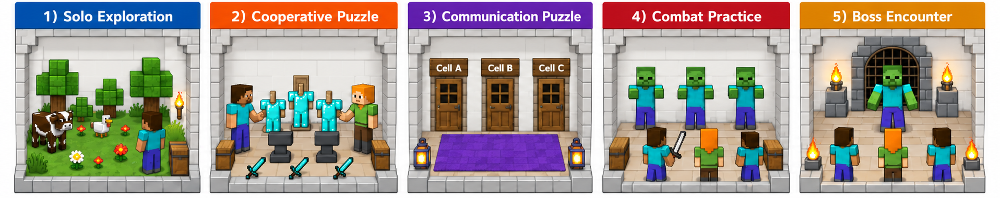
WIRE. Five sequential chambers increase coordination demand from individual skill acquisition to cooperative resource use, partial-observability communication, team combat, and a boss encounter.
One episode, chamber by chamber, all three agents side by side so their views can be compared in parallel. Every clip on this page is a real recording of first-person views: one rendered frame per environment step, replayed at six steps per second. The button on each clip narrows it to the agent contributing to the action.
agent 0
agent 0agent 1agent 2
Chamber 1 — Solo skill acquisition
Move, dig, pick things up, kill a passive animal. Nothing here is shared, so the team enters Chamber 2 with the primitives already learned. Resources acquired here are useful later.
seed 123, episode 1, steps 40–100 · the tour follows agent 0
Messages, step-synced — click one to jump
t37a0→ a1I'm targeting the wood block ahead to help unlock the door milestone.
t37a1→ a0Centering sheep now to help unlock door 1
t38a0→ a1I see the trunk on the left; I'll move towards the center area to scan for resources to help with the milestone.
t38a1→ a0I hit a wall; turning right to try and find the path to Door 1.
t39a0→ a1I'm moving forward to check the structure ahead, hope to find a path to Door 1.
t40a0→ a1I am moving forward now to check the structure ahead.
t40a1→ a0I'm continuing to push forward to find Door 1; let me know if you see anything helpful on your side.
t41a0→ a1I'm moving forward to check the wall structure, let me know if you find any openings near Door 1.
t41a1→ a0Continuing forward to scan the area near the central wood structure.
t42a0→ a1I am holding position, scanning the immediate area for any visible targets to help with the milestone.
t43a0→ a1I'm moving forward now to scan this area for resources.
t43a1→ a0Continuing forward to survey this section of the room.
t44a0→ a1I'm stopping to check what's ahead. Let me know if you see anything useful.
t44a1→ a0I am blocked by stone ahead; backing up now to survey.
t45a0→ a1I'm moving forward now to see what's blocking us.
t45a1→ a0I'm turning right to check the corner since we are blocked ahead.
t46a0→ a1I'm moving forward to check the blockage you found.
t46a1→ a0I'm digging the tree trunk now to help unlock Door 1.
t47a0→ a1I stopped moving; there is a solid block ahead.
t48a0→ a1I'm moving forward to check the immediate obstacle ahead.
t48a1→ a0I see a wood block right here; starting to break it for the milestone.
t49a0→ a1I'm moving forward to confirm the boundary ahead.
t49a1→ a0I'm turning right to survey around this big block.
t50a0→ a1I'm moving forward to observe the structure ahead; let me know if you see anything near the north wall.
t50a1→ a0I'm moving forward to check the corridor ahead, hoping to find Door 1.
t51a0→ a1Still surveying the area, I'll keep moving forward to find a clear path.
t52a0→ a1I'm moving forward to check the structure ahead.
t52a1→ a0I'm turning right to survey the immediate area, looking for a clear path towards the North door.
t53a0→ a1I stopped to observe the immediate structure ahead, what do you see on your side?
t53a1→ a0I'm moving forward to survey the area, checking for the north wall.
t54a0→ a1I am moving forward to check the structure ahead.
t54a1→ a0The wall is blocking forward progress here; I'm turning right to see around it.
t55a0→ a1I see the blockage too; I'll check the side walls.
t55a1→ a0Continuing forward search for the north wall door.
t56a0→ a1I'm moving forward to check the structure ahead.
t57a0→ a1I see the block too; turning right to check around it.
t57a1→ a0Continuing forward to survey the area towards Door 1.
t58a0→ a1I'm moving forward too, let me know if you find the door
t58a1→ a0Continuing forward to find Door 1
t59a0→ a1I see the trunk on the left; turning to center it now.
t59a1→ a0I see a large trunk right; turning to check it out.
t60a0→ a1I'm moving forward now to check the structure ahead. Let me know if you see anything near the door.
t60a1→ a0Trunk is left; turning to center it for milestone progress.
t61a0→ a1I'm turning right to check the immediate area, looking for anything Agent 1 saw.
t61a1→ a0Still moving forward, looking for the door structure.
t62a0→ a1I see the trees; I'll start digging for milestones.
t62a1→ a0Keep moving forward, I'll watch for the door structure.
t63a0→ a1Moving forward now to continue the survey for Door 1.
t64a0→ a1I reached a solid wall; turning right to check surroundings for Door 1 structure.
t64a1→ a0Still moving forward, looking for the door structure.
t65a0→ a1I'm moving forward to check the obstruction ahead, confirming the path.
t66a0→ a1I stopped moving to check the wall texture.
t66a1→ a0Still moving forward, looking for the door structure.
t67a0→ a1Red wall is solid, no immediate dig target.
t68a0→ a1I am stationary now, looking at the wall structure ahead.
t68a1→ a0Still moving forward, checking for door changes.
t69a0→ a1I am moving forward to see past the teammate ahead.
t70a0→ a1I am stopped here; checking surroundings for structure.
t71a0→ a1I am checking the block directly ahead; it looks like dark stone.
t71a1→ a0Still moving forward, looking for the door structure now.
t72a0→ a1I'm aiming at the wood structure here; let's try to chip away at it to make progress.
t72a1→ a0I'm turning right to check the immediate area near the wall structure.
t73a0→ a1I'm moving forward to see what's ahead of me in this dark area.
t73a1→ a0I see wood structure, turning right to aim at it to help unlock the door.
t74a0→ a1I'm stopping movement to observe the immediate block texture.
t74a1→ a0Continuing forward to survey the dark area ahead.
t75a0→ a1I am moving forward to check the immediate surroundings for blocks or mobs to help unlock Door 1.
t75a1→ a0Continuing forward survey, look for door structure.
t76a0→ a1I am stopping to observe the immediate structure ahead, checking the environment before moving further.
t76a1→ a0Continuing forward to help survey the area.
t77a0→ a1Moving forward to survey the immediate area.
t77a1→ a0Still dark here, turning right to survey structure ahead.
t78a0→ a1I stopped moving to look closely at the immediate structure ahead.
t78a1→ a0Still surveying area, look for door structure.
t79a0→ a1I'm moving forward to check the structure ahead.
t80a0→ a1Still dark, I'm stopped by something solid here.
t81a0→ a1Moving forward to check the blockage as instructed.
t82a0→ a1I am blocked here, turning right to survey the immediate area.
t83a0→ a1I am moving forward now to check the wall texture.
t84a0→ a1I'm moving forward into the corridor to observe the walls.
t85a0→ a1Still moving forward into the corridor, watching the wall texture.
t86a0→ a1I stopped moving; the center is stone wall.
t86a1→ a0Continuing forward to check wall texture.
t86a2→ a0I am moving forward now to scout the area, Agent0. Let me know if you spot anything near the NW wall.
t87a0→ a1I'm moving forward to check the wall texture as suggested.
t87a1→ a0I see the stone wall blocking forward movement; I am turning right to survey the passage.
t88a0→ a1Stone wall is directly ahead; I am pausing to observe the texture.
t88a1→ a0Continuing forward to survey the area; watch for the north wall.
t89a0→ a1Moving forward now, watching for walls like agent_1.
t90a0→ a1I am continuing forward to observe the wall structure.
t90a1→ a0I see a tree trunk here, I'll start digging it to help unlock the door.
t91a0→ a1I see a tree trunk on the right, I will start digging it for the milestone.
t92a0→ a1I see a block here, starting to dig it to help unlock Door 1.
t93a0→ a1I am moving forward now to see what's ahead.
t94a0→ a1I see wood ahead, I will start digging it.
t94a1→ a0Continuing forward to survey the area; looking for the North wall door.
t95a0→ a1I am moving forward to survey the area like agent_1, I will report what I see at the wall.
t95a1→ a0Continuing forward exploration, watching for Door 1.
t96a0→ a1I am observing the block ahead; it looks like stone.
t96a1→ a0I am continuing to move forward toward the north wall to locate Door 1.
t97a0→ a1I'm moving forward to survey the area; let me know if you spot anything near Door 1.
t97a1→ a0Found a log block, turning to hit it.
t98a0→ a1I'm digging the wall in front of me to see what it is. Let me know if you find anything near Door 1.
t98a1→ a0I am moving forward towards the north wall now.
t99a0→ a1I am moving forward to check the front boundary.
t99a2→ a0Turning right now to follow the critique and change my pathing loop.
t100a0→ a1Still facing the dark block, seems like a wall.
An anvil decays exactly as fast as one agent can damage it, so digging alone is net zero. Two agents digging the same anvil inside the same short window break it — the first place where talking is not enough and timing has to line up.
seed 123, episode 1, steps 230–290 · the tour follows agent 0
Messages, step-synced — click one to jump
t227a0→ a1I've turned and see the anvils; I'll move closer to coordinate.
t228a0→ a1I see an anvil centered; let's coordinate a dig soon.
t229a0→ a1Moving forward now to test collision boundary as planned.
t230a0→ a1Moving forward to find the center anvils. Let me know if you see them first.
t231a0→ a1I'm turning around to survey the area we just moved through.
t231a1→ a0I'm moving forward towards the center anvils. Let me know if you see them first.
t232a0→ a1I'm moving forward now to find the anvils.
t233a0→ a1Still moving forward towards the center anvils.
t233a1→ a0Still moving toward the center anvils.
t234a0→ a1I am moving forward to find the anvils too.
t234a1→ a0Still moving towards center anvils.
t235a0→ a1Turning around to check passage.
t236a0→ a1Moving forward now, expecting a collision soon.
t236a1→ a0I am moving toward the center; look for the anvils.
t237a0→ a1Turning around to survey the path we just took.
t237a1→ a0Moving forward toward center anvils now.
t238a0→ a1I am moving forward now to find the anvils.
t238a1→ a0Keep moving toward the center anvils.
t239a0→ a1I'm moving forward now to test the boundaries of this room.
t239a1→ a0Moving forward now to find anvils
t240a0→ a1I am moving forward to find the anvils too.
t240a1→ a0I'm turning right to find the center anvils.
t241a0→ a1Still moving toward the perceived front wall.
t241a1→ a0I'm moving forward to meet up at the anvils.
t242a0→ a1Still moving forward towards collision point.
t242a1→ a0I'm turning right to find the anvils; keep moving toward the center.
t243a0→ a1I am still moving forward in Ch2, aiming for the anvils.
t243a1→ a0I am moving forward to join the anvil coordination.
t244a0→ a1Still moving toward collision point.
t245a0→ a1Moving forward now to test the path until collision.
t245a1→ a0Moving center now, ready for anvil coordination.
t246a0→ a1Moving forward to find the wall/object.
t246a1→ a0Moving center now, ready to coordinate anvil hits.
t247a0→ a1Moving forward now to hit wall
t248a0→ a1Still moving forward towards collision point.
t249a0→ a1I am moving forward to find the collision point as tasked.
t270a1→ a0Approaching center anvils now, watch for coordination.
t271a0→ a1I am moving forward to find the collision point.
t271a1→ a0Keep tracking anvils
t272a0→ a1Still moving forward to find the collision point.
t272a1→ a0I am moving forward now to meet the anvils.
t273a0→ a1Moving forward to find the collision point.
t273a1→ a0Approaching center point now.
t274a0→ a1Continuing forward to find the collision point.
t274a1→ a0Moving toward center anvils now.
t275a0→ a1Still moving forward to find the collision point.
t275a1→ a0Still moving toward anvils.
t276a0→ a1Turning right to find the wall boundary as instructed.
t276a1→ a0Still moving toward the center anvils, Agent 0. Let me know when you are ready to coordinate.
t277a0→ a1I am moving forward now to test for collision, let me know when you are near the center anvils.
t277a1→ a0I am moving forward now to reach the anvils.
t278a0→ a1Moving forward to reach the anvils, Agent 1. Let's coordinate hits soon.
t278a1→ a0I'm moving forward now, heading toward the center anvils.
t279a0→ a1I am moving forward now to test the boundary condition.
t279a1→ a0I am moving toward the center anvils. Let's coordinate hits soon.
t280a0→ a1Moving forward to find the wall; I'm tracking agent_1's approach to the anvils.
t280a1→ a0Moving forward now to reach the anvils. Let's coordinate our dig attempts.
t281a0→ a1Still moving forward as instructed. Let me know when you see the anvils.
t281a1→ a0Moving forward to meet at anvils.
t282a0→ a1Still moving forward until I hit something solid. I'm trying to follow the path to the anvils.
t282a1→ a0Still moving forward toward the exit.
t283a0→ a1Still moving forward toward the exit.
t283a1→ a0I'm still moving forward, looking for Door 1.
t284a0→ a1Still moving forward, checking for collision.
t284a1→ a0Continuing forward to find Door 1
t285a0→ a1Hit a corner, stopping movement now.
t285a1→ a0I'm moving forward now; let me know if you see the transition point to Ch2.
t286a0→ a1Moving forward now, watching for collision.
t286a1→ a0Still moving forward, checking for Door 1.
t287a0→ a1Still moving forward, checking for door.
t287a1→ a0Still moving towards Door 1 in Ch1.
t288a0→ a1I am stopped against a corner, observing the block here.
t288a1→ a0Continuing forward towards Door 1, let me know if you see it.
t289a0→ a1I am moving forward to confirm collision; let me know if you see the anvils.
t289a1→ a0I am continuing forward towards Door 1 now.
t290a0→ a1I am moving forward to reach the anvils for coordination.
t290a1→ a0I am still moving toward Door 1 in Ch1; let me know if you see it.
agent 0agent 1
agent 0agent 1agent 2
Chamber 3 — Communication under partial observability
Agents are teleported into isolated cells wired in a cycle: each agent's switch opens the next agent's door. Nobody can free themselves, and nobody can see the cell their own switch governs, so release propagates only through targeted messages.
seed 123, episode 1, steps 430–470 · the tour follows agents 0 & 1
Messages, step-synced — click one to jump
t427a0→ a2I am moving forward now to see if I can get closer to the south wall to find the switch.
t427a1→ a0Door still locked. Need switch press.
t427a2→ a0I am moving forward now to check for the transition area.
t428a0→ a2I am turning to sweep the cell; I need agent_2 to check if they see any visual cues from their side.
t428a1→ a0Door is still locked, need switch press.
t428a2→ a0Moving forward to reach the door
t429a0→ a1Switch is on south wall
t429a1→ a0Door still locked.
t429a2→ a0I am moving forward to approach the south wall now.
t430a0→ a1Still locked here
t430a1→ a0Scanning south wall now, let me know if you see the blue switch
t430a2→ a0Turning right now to face south wall; check if you see the switch from your angle.
t431a0→ a1I am moving forward now to get a better view of the area where you are scanning the south wall.
t431a1→ a0I'll move forward to scan the cell walls for the switch location.
t431a2→ a0I'm moving forward now; check if you see the switch from your angle.
t432a0→ a2I am turning to face the south wall where the switch is; check if you see it from your angle.
t432a1→ a0Scanning south wall for switch
t432a2→ a0I am moving forward to check the cell layout for the switch location.
t433a0→ a1I'm turning to sweep the cell walls, looking for the blue switch on the south wall.
t433a1→ a0I am moving forward now to try and locate the switch or the main area.
t433a2→ a0Still scanning south wall for switch cues.
t434a0→ a1I'm moving forward to check the corridor ahead.
t434a1→ a0Agent 0, I'm turning left to scan the walls, let me know if you see the switch.
t434a2→ a0I am moving forward to try and get a better look at the south wall for the switch cue.
t435a0→ a2I'm turning right to scan the corridor walls, let me know if you see any switch cues on your end.
t435a1→ a0I'm turning right to check the wall area, looking for the switch.
t435a2→ a0I am moving forward to check the south wall area for the switch cues you mentioned.
t436a0→ a1Moving forward now, watching for the switch or a doorway.
t436a1→ a0Agent 0, I am turning left to scan the cell walls for the switch.
t436a2→ a0I'm turning to face the south wall now, looking for the blue switch cue you mentioned.
t437a0→ a1I am waiting for the switch press. Let me know when you see it.
t437a1→ a0Still in cell, looking for the south wall switch.
t437a2→ a0I am moving forward to get a better look at the south wall for the switch.
t438a0→ a2I'm moving forward to sweep the corridor; let me know if you see any change in the wall structure on your side.
t438a1→ a0I'm scanning the walls here, looking for the blue switch or door state change.
t438a2→ a0I'm moving forward, check if you spot the switch on the south wall from here.
t439a0→ a1Still stuck in cell. Check door state if you see any change.
t439a1→ a0I am moving forward to find the anvils; let me know if you see the switch status change.
t439a2→ a0I'm still scanning the walls for any switch cues on my end.
t440a0→ a2I'm moving forward to check the cell walls for the switch location.
t440a1→ a0I am turning to find the south wall switch, let me know if you see any door changes.
t440a2→ a0Still scanning walls for any switch cues on my end.
t441a0→ a1Blue cube is right; I'm turning to face it now.
t441a1→ a0I am moving forward now to see the south wall for the switch.
t441a2→ a0Still scanning my side for any wall changes near the switch location.
t442a0→ a1Blue switch is centered. I will press it now.
t442a1→ a0I'm turning right to face the blue cube; let me know if you see any door change.
t442a2→ a0Still scanning walls, no blue switch visible from my side yet.
t443a0→ a1I am digging the blue cube now; check if your door state changed.
t443a1→ a0Door is open, moving north now
t443a2→ a0Still scanning walls for switch cues here.
t444a0→ a1Digging switch now, need door open for me
t444a1→ a0Door state update?
t444a2→ a0Maintaining position, ready to scan for switch cues on my side.
t445a0→ a2Digging switch now. Need Agent 2 to press theirs to open my door.
t445a1→ a0Door state check needed
t445a2→ a0I'm turning right to scan the wall structure here, let me know if you see any change on your end.
t447a0→ a1Switch is centered, I am pressing it now.
t447a1→ a0Door is open, moving out now.
t447a2→ a0I see the wall ahead is solid; I'm turning to find my switch on the south wall.
t448a0→ a1Digging switch now, hoping it frees my cell.
t448a1→ a0Door state still locked?
t448a2→ a0I'll turn to find my switch cube.
t449a0→ a1Digging switch now, hope door opens soon.
t449a1→ a0Door is open, moving north now.
t449a2→ a0I am moving forward now, look for my switch to press.
t450a0→ a1I am pressing the switch cube now, hoping to open my cell door.
t450a1→ a0Door is open, moving out now.
t450a2→ a0I am turning to find my switch. Let me know when you press yours.
t451a0→ a2I am pressing the switch now. Check your door state.
t451a1→ a0Door is open, moving north now.
t451a2→ a0Ready to press my switch when you are.
t452a0→ a2Switch is centered, pressing now.
t452a1→ a0Door is open, moving north now.
t452a2→ a0Switch is centered, I'm pressing it now.
t453a0→ a2I'm digging the switch now, hope it helps open the door!
t453a1→ a0Door is open, heading north now.
t453a2→ a0Switch pressed, check door state
t454a0→ a2Switch pressed, check door state now.
t454a1→ a0Door is open, heading out now.
t454a2→ a0Pressing my switch now
t455a0→ a2Switch centered, pressing now.
t455a1→ a0Door state is OPEN, moving north now.
t455a2→ a0Waiting for door state change
t456a0→ a2Switch centered, ready to press.
t456a1→ a0Door is open, heading north now.
t456a2→ a0Confirm door state after your press.
t457a0→ a2Switch is centered, pressing it now.
t457a1→ a0Door is open, moving north now.
t457a2→ a0Door still locked?
t458a0→ a2I am pressing the switch now; let me know if the door changes state.
t458a1→ a0Door is open, moving North now.
t458a2→ a0Door still locked?
t459a0→ a2Digging switch now, hope it helps open the door.
t459a1→ a0I am moving North now as the door is open, I will report when I see the communal room.
t459a2→ a0Still in cell, waiting for door state change.
t460a0→ a2Re-pressing switch now to check door state.
t460a1→ a0Door state is OPEN, moving north now.
t460a2→ a0Door state?
t461a0→ a2I am pressing the switch now; check door state.
t461a1→ a0Door is open, moving north now to reach the communal area.
t461a2→ a0Cell door is still locked, waiting for switch activation.
t462a0→ a2Agent 2, I am Digging the switch now. Let me know if anything changes on your end.
t462a1→ a0Cell door is open, moving out now.
t462a2→ a0Still waiting for door state update.
t463a0→ a2Switch is here, digging again.
t463a1→ a0Door should open now; moving north.
t463a2→ a0Still in cell, waiting for door state update.
t464a0→ a2Switch pressed, waiting on door state
t464a1→ a0I am moving north now, following the directive to leave the cell and reach the communal room.
t464a2→ a0Waiting for door state change after your dig.
t465a0→ a2Digging switch again; check door status.
t465a1→ a0Still moving north towards the communal room exit.
t465a2→ a0Did the switch press work yet?
t466a0→ a2Switch is centered, digging again to confirm state change.
t466a1→ a0Door is open, moving north now.
t466a2→ a0Waiting for door state update.
t467a0→ a2I am pressing the switch now. Let me know if the door state changes.
t467a1→ a0Cell door is open, continuing north towards the communal room.
t467a2→ a0Door still locked?
t468a0→ a2Switch centered, pressing now.
t468a1→ a0Door is open, moving north now.
t468a2→ a0Door state?
t469a0→ a2Switch pressed
t469a1→ a0Door is open, moving north now.
t469a2→ a0Still locked, waiting for switch activation.
t470a0→ a2Switch pressed again, check door state
t470a1→ a0Door state is key; let me know if you see any change from your end.
t470a2→ a0Still locked here.
agent 0
agent 0agent 1agent 2
Chamber 4 — Team combat
Three zombies. A fatal hit costs −10 instead of killing, which makes the chamber a rehearsal: the team can practise focusing fire where dying is not yet final.
seed 123, episode 1, steps 620–680 · the tour follows agent 0
Messages, step-synced — click one to jump
t617a0→ a1I am turning right to align with the zombies in Ch4.
t617a2→ a0Agent 0, I see you ahead; let's coordinate on the zombies.
t618a0→ a2Turning right now to track zombies with agent_2
t618a1→ a0I'm turning right to find the zombies as per the plan.
t619a0→ a1Turning right now to align with Agent 1's search for zombies.
t619a1→ a0Zombies are here, I'm turning to engage.
t620a0→ a1Turning right now to hit the 90 degree mark.
t620a1→ a0Moving forward to join the zombie fight near agent2.
t621a0→ a1Yaw should now be near 450 degrees; I'm aligning for the fight.
t621a1→ a0Zombies are visible, I'm turning to join the fight.
t621a2→ a0Moving forward now to join the fight.
t622a0→ a1Continuing turn to face zombies.
t622a1→ a0Aligning for combat, I'll focus on the zombies now.
t623a0→ a1Turning right now, should be facing combat direction.
t623a1→ a0Moving forward now to engage zombies, watch for Agent0's position.
t624a0→ a1I'm continuing the turn to orient towards the zombies.
t624a1→ a0Facing right, I'm looking for the zombies now.
t625a0→ a1Still rotating, aiming for 90 degree turn.
t625a1→ a0Moving forward to engage zombies with you both.
t625a2→ a0Still looking for zombies
t626a0→ a1Continuing the turn now as instructed.
t627a0→ a1Turning right now, expect the view to shift towards the combat area.
t627a1→ a0Zombies are present in Ch4, I'm moving toward the door/fight area.
t628a0→ a1Turning right to align with the zombies in Ch4.
t629a0→ a1Turn complete? Let me know when you see the zombies.
t630a0→ a1Turning right now to face the zombies in Ch4.
t630a1→ a0Still moving forward to find the next passage.
t631a0→ a1Turning now, ready to join fight
t631a1→ a0Still moving toward the passage
t632a0→ a1I am turning right now to face the zombies in Ch4.
t632a1→ a0Still moving forward in this corridor; looking for the next passage.
t633a0→ a1I'm moving forward to join the fight in Ch4.
t633a1→ a0Moving forward now, expecting to find the next door or passage.
t634a0→ a1Turning right now as requested, ready to assist in Ch4 combat.
t635a0→ a1Turning right now, expecting to face the zombies or the door.
t636a0→ a1Turning right now to align for the zombies.
t636a1→ a0I'm joining the fight now, aiming for the zombie.
t637a0→ a1I'm moving forward now, let me know if you see the zombies.
t637a1→ a0Zombie centered, I'm hitting it now.
t638a0→ a1Turning right now to align with the fight.
t639a0→ a1Continuing the 90 degree turn now to align with the wall.
t639a1→ a0Zombie is left, turning to center it for attack.
t640a0→ a1Continuing turn for 90 deg right. Should be aligned soon.
t641a0→ a1I'm turning right to align with the zombies; let me know if you see the door opening soon.
t642a0→ a1Turning right now, expecting yaw to be closer to 450 degrees for the door.
t642a1→ a0Zombie centered, starting attack.
t643a0→ a1Continuing the 90-degree turn as requested; I'm aiming for the wall alignment now.
t643a2→ a0Moving forward to join the fight; watch for zombies.
t644a0→ a1Turning right now; aiming for 90 deg turn.
t644a1→ a0I'm attacking the zombie now. Watch for drops.
t645a0→ a1Turning right to align with the wall as planned.
t646a0→ a1Turning right now to align with the next direction in Ch4.
t647a0→ a1Ready to join the fight when I'm oriented.
t647a2→ a0Moving toward Agent 0 to join the fight.
t648a0→ a1Ready to move into the fight, I'll follow Agent 1's lead.
t648a1→ a0Still looking for Door 1 in Ch1
t649a0→ a1I am turning right now to get oriented for the fight in Ch4.
t650a0→ a1I'm turning right now to get oriented for the fight.
t650a1→ a0I am moving forward to advance into the fight area in Ch4.
t651a0→ a1Facing right now, ready to help fight zombies.
t651a1→ a0Moving forward to join the fight area in Ch4.
t652a0→ a1Turning right now to match target yaw
t652a1→ a0Moving forward now to meet up with the fight in Ch4
t653a0→ a1Still turning right to match orientation for Ch4 fight.
t653a1→ a0I am moving forward to meet the fight in Ch4.
t654a0→ a1I am turning right now to match the required yaw.
t654a1→ a0Still moving towards the door in Ch1.
t655a0→ a1Continuing turn right to meet the 90 degree alignment goal.
t655a1→ a0Still moving towards the exit path.
t656a0→ a1Turning right as requested; should align better with the path now.
t656a1→ a0I'm moving forward now, checking for the path to Ch2, as per the critique.
t657a0→ a1Continuing turn right to hit 450 yaw.
t657a1→ a0Still dark here, moving toward the exit.
t658a0→ a1I am turning right to align with the task goal.
t658a1→ a0Still looking for Door 1, I'm turning right to check the right side of the current area.
t659a0→ a2I see the locked door ahead, ready to engage zombies.
t659a1→ a0Continuing to move forward to find the exit door.
t660a0→ a1Turning right now to meet the orientation goal, let me know if you see the door from your side.
t660a1→ a0Zombie is centered, starting attack now.
t661a0→ a1Moving forward now to assess the immediate area as directed.
t661a1→ a0Zombie is centered, I'm attacking it now.
t662a0→ a2Turning right now to meet the orientation task goal.
t662a1→ a0Mob is here. I'll start hitting it.
t663a0→ a1Turning right now. Expecting to see the passage open up or hit a corner.
t663a2→ a0Still sweeping for mobs, agent_0. I'll keep turning until I see a target.
t664a0→ a2Turning right now as instructed; I'm aiming for the door in Ch4.
t665a0→ a2I am turning right now to align for combat with the zombies.
t666a0→ a2Zombie centered. Starting attack.
t667a0→ a2I see two zombies centered; I'm attacking them now to help clear the path to Ch5.
t667a2→ a0I see wood, not zombies. Turning right to find the fight.
t668a0→ a2Turning right now to hit the 90-degree yaw target as instructed.
t668a2→ a0I'm moving forward to join the fight, let me know if you see the zombies clearly
t669a0→ a2Moving forward now to align with the fight in Ch4. Let me know if you see the zombies clearly.
t669a2→ a0Turning right to sweep for targets, Agent 0, let me know if you see the fight zone.
t670a0→ a1I am turning right to align with the objective. I see the barrel on my right.
t670a1→ a0Boss is centered, starting attack sequence.
t670a2→ a0I'm moving forward to find the fight; keep focused on the zombies.
t671a0→ a1I'm turning to find the zombies, keep up!
t671a2→ a0I'm turning right to try and spot the zombies, let me know if you see them clearly.
t672a0→ a1I'm moving forward now to see the layout in Ch4, watch out for zombies.
t672a1→ a0Boss centered, I'm hitting it now
t673a0→ a2Turning right now to get to the right facing direction for the fight.
t674a0→ a2I'm moving forward now to check the area for zombies or an opening.
t674a1→ a0Boss is centered slightly left; I'm turning to face him for combat.
t675a0→ a2Executing turn right as instructed. I expect to be facing the zombies soon.
t675a1→ a0Centering on zombie now. Ready to engage.
t676a0→ a2I am moving forward to see if I can get past this corner/blockage.
t676a1→ a0Boss is left, turning to re-center for next hit.
t677a0→ a2Turning right now as instructed to find the zombies.
t677a1→ a0Focusing on the wood here.
t678a0→ a2The blue block is centered; I'm moving forward to confirm if this is Ch3 or Ch4.
t678a1→ a0The front is solid red; backing up to check surroundings.
t679a0→ a2Turning right now as instructed; checking orientation for zombie engagement.
t679a2→ a0Turning right to track the fight, let me know if you spot any zombies.
t680a0→ a2Continuing to turn right as requested by the critique; let me know if you see the zombies now.
t680a1→ a0I'm turning right to follow the dark area mentioned in the critique; let me know if you see anything useful from your side in Ch4.
t680a2→ a0I am moving forward now to try and spot the zombies or the arena.
agent 0agent 1
agent 0agent 1agent 2
Chamber 5 — Cooperative boss fight
A powered zombie with three times an ordinary mob's health — more than one agent can burn through inside the time budget. Here death is real and permanent, and the episode ends when the boss falls or the whole team is down.
seed 123, episode 1, steps 830–890 · the tour follows agents 0 & 1
Messages, step-synced — click one to jump
t827a0→ a1Moving forward to join the boss fight with Agent 1.
t827a1→ a0Moving forward to join the boss fight; watch for the boss target.
t827a2→ a1I'm moving forward now to find the boss fight area. Let me know when you see an opening.
t828a0→ a1Moving forward to join the fight. Keep me updated on boss health.
t828a1→ a0Turning right now to align with the boss fight.
t828a2→ a1Turning right to locate the boss.
t829a0→ a1Turning right now to align with the boss.
t829a1→ a0I am moving forward to join the fight.
t829a2→ a1I'm moving forward now to try and reach Ch5. Let me know if you see a clear path!
t830a0→ a1Still turning right to align with the target orientation.
t830a1→ a0Boss is visible to the right, turning to center it for damage.
t830a2→ a1I'm turning right to sweep for the boss or agent_1 in Ch5.
t831a0→ a1I am moving forward to engage the boss now.
t831a1→ a0I see the boss centered left, turning right to align for attack.
t831a2→ a1I'm moving forward to join the fight in Ch5; let me know if you need me to focus on anything specific.
t832a0→ a1I am moving forward now to get closer to the fight, let me know if you see a clear line of attack.
t832a1→ a2I'm moving forward to locate the boss. Let me know if you see him.
t832a2→ a1Boss is visible on the right; I'm turning to center for focus fire.
t833a0→ a1I see a mob here, I'll start attacking it to contribute to the boss damage.
t833a1→ a2Turning right to find the boss Agent 2 saw.
t833a2→ a1Boss is centered, starting damage now.
t834a0→ a2I'm moving forward now to survey the corridor alignment.
t834a1→ a0Boss is visible; I'm starting damage now.
t834a2→ a1I'm moving forward to find the boss too.
t835a0→ a1Turning right now to align with the target orientation for Ch5 entry.
t835a1→ a0I'm joining the fight, aiming at the boss.
t835a2→ a0Moving forward to join the engagement zone.
t836a0→ a1Moving forward now to join the fight.
t836a1→ a0I'm at 0 HP, retreating to avoid taking more damage; watch the boss health.
t836a2→ a1Moving forward now to meet the fight.
t837a0→ a1Boss is visible in Ch5, but my view shows nature. Moving forward to confirm environment.
t837a1→ a0I am moving forward to engage the boss.
t837a2→ a1Moving forward to join the fight near the boss.
t838a0→ a1Need to align for movement
t838a1→ a2I'm moving forward towards the boss location in Ch5.
t838a2→ a1I'm moving forward to meet you both in the boss area.
t839a0→ a1I am turning right to get oriented for the boss fight.
t839a1→ a2Moving towards the boss area now. Ready to attack.
t839a2→ a1Moving forward to join the fight.
t840a0→ a1I'm turning right now to meet the orientation task.
t840a1→ a2Ready to join the fight, looking for the boss.
t840a2→ a0I'm turning right to survey the corridor alignment.
t841a0→ a1Continuing turn right now
t841a1→ a2Moving forward to engage boss. Ready to take hits.
t841a2→ a0Agent0, I see you ahead. I'm turning right to catch up to you and the boss.
t842a0→ a1Turning right to align with the critique, let me know if you see the boss better from that angle.
t842a1→ a2Moving towards the boss area now. Ready to deal damage.
t842a2→ a1See agent1 ahead, moving to join survey.
t843a0→ a2Confirming yaw change; I'm turning right to match agent_2's survey.
t843a1→ a2Boss is visible to the right, turning to center for attack.
t843a2→ a1I'm moving forward to find the boss; are you seeing it yet?
t844a0→ a1Turning right to align for the boss fight.
t844a1→ a2Moving toward the boss now, let me know when you see it too!
t844a2→ a1Boss right? I'm turning right to track.
t845a0→ a2Turning right now to match Agent2's survey direction.
t845a1→ a2Turning right to track boss, I'm closing in.
t845a2→ a1I'm turning to locate the boss; let me know if you see it clearly.
t846a0→ a1I am turning right to align with the boss fight area; let me know if you need support.
t846a1→ a2I see the mobs, aiming to join the fight.
t846a2→ a1Boss is visible to my right; I'm turning to aim.
t847a0→ a2Still turning right to align with the critique.
t847a1→ a2Boss is visible to my right; I'm turning to aim.
t847a2→ a1Moving forward to join the fight with you both.
t848a0→ a2I'm turning right to align with the group in Ch5.
t848a1→ a2Boss is on the right, turning to aim for the hit.
t848a2→ a1Boss right, turning to join fight.
t849a0→ a2Turning right to align for boss fight
t849a1→ a2Boss is visible right, turning to center for damage.
t849a2→ a1Boss right, I'll turn to join fight.
t850a0→ a2Agent2, I am turning right to align with the boss fight direction.
t850a1→ a2Boss is visible right of center, turning to align for attack.
t850a2→ a1Moving forward to join the boss fight, let me know if you see the boss centered.
t851a0→ a2Still turning right to hit 180 deg for survey.
t851a1→ a2I'm turning right to center the boss, ready to contribute damage.
t851a2→ a1Boss is right, turning to align for attack.
t852a0→ a2Agent2, I am turning right to align with the boss fight direction.
t852a1→ a2Turning right to align with boss, let me know when you're ready to hit.
t852a2→ a1Boss is centered, starting damage now.
t853a0→ a2I'm turning right to align towards the boss, let me know when you see the opening.
t853a1→ a2Moving forward to join the boss fight. Let me know if I need to adjust aim.
t853a2→ a1Moving forward now to join the attack, let me know when the boss is centered for hits.
t854a0→ a2I am turning right as instructed to face west for the survey.
t854a1→ a2Boss centered, starting damage now.
t854a2→ a1I'm moving forward to join the boss fight, let me know when you're ready to focus fire.
t855a0→ a2Continuing to turn right as requested to face west for surveying.
t855a1→ a2I'm moving forward to join the fight. Let me know when the boss is lined up for fire.
t855a2→ a1Boss centered? I'm moving in to join the fight.
t856a0→ a2I'm moving forward now to locate the boss. Let me know if you see him.
t856a1→ a2Ready to focus fire when boss is centered
t856a2→ a1Moving forward to join the fight. Let me know when the boss is lined up for fire.
t857a0→ a2I'm turning right as instructed to align with the boss fight in Ch5.
t857a1→ a2Boss visible, turning to line up for hits
t857a2→ a0I am moving forward to join the fight. Let me know when you spot the boss.
t858a0→ a2I am moving forward now to join the fight; let me know when you see the boss.
t858a1→ a2Boss visible? I'm moving forward to join the attack.
t858a2→ a1Boss visible, moving to join fight
t859a0→ a2I'm turning right to find the boss location, let me know if you see him first.
t859a1→ a2Boss not visible yet, turning to scan area.
t859a2→ a1Boss visible? Moving forward to join attack.
t860a0→ a2Boss is visible to my right, turning left to center him now.
t860a1→ a2Boss visible, moving to join attack.
t860a2→ a0I'm turning right to scan for the boss; let me know if you spot him first.
t861a0→ a2I'm turning right to scan for the boss too. Let me know if you see him first.
t861a1→ a2Boss is visible, I am turning to line up attack.
t861a2→ a0Boss on right, turning to join attack.
t862a0→ a2Boss is on the right, turning to join the attack.
t862a1→ a2Boss is visible on left, turning to center it for attack.
t862a2→ a1I am turning right to find the boss, please confirm your line of sight.
t863a0→ a2I'm moving forward now to meet the boss; let me know if you see him centered.
t863a1→ a2Boss centered? Ready to hit?
t863a2→ a0Boss right, turning to join attack
t864a0→ a2I am turning right to align with Agent 2's direction in Ch5.
t864a1→ a2Boss visible? I'm moving forward now.
t864a2→ a0Moving forward to find the boss location.
t865a0→ a2I am turning to align with the boss location.
t865a1→ a2I'm moving forward now, checking for the boss visibility.
t865a2→ a1Boss near? Moving closer now.
t866a0→ a2Continuing turn right as instructed by critique.
t866a1→ a2Boss is ahead, moving to line up for damage.
t866a2→ a0I am moving forward to join the fight.
t867a0→ a2I'm moving forward to join the fight area, watch for the boss.
t867a1→ a2Boss visible? I'm scanning the area now.
t867a2→ a1Turning right to find the boss location; let me know when you are lined up.
t868a0→ a2Turning right now as instructed.
t868a1→ a2I am moving forward now to close distance to the boss.
t868a2→ a1Moving forward now, look for boss center.
t869a0→ a2I'm turning right to align with the boss location, Agent 2. Ready to engage.
t869a1→ a2Moving forward to find the boss location
t869a2→ a0Still moving toward the fight, looking for team.
t870a0→ a2Moving forward to join the fight, stay close.
t870a1→ a2I am moving forward to close distance, ready to attack when you line up.
t870a2→ a0Moving forward to join the fight
t871a0→ a2I'm moving forward to join the boss fight.
t871a1→ a2I am turning to line up the boss; let me know when you see the center.
t871a2→ a0Moving forward to join the boss fight. Ready to attack.
t872a0→ a2Turning right now to join the fight with agent_2
t872a1→ a2Boss is visible, I'm attacking now.
t872a2→ a1Moving closer to the boss now. Ready to focus fire.
t873a0→ a2I see Agent 2 moving forward. I'm turning to face the boss now.
t873a1→ a2Boss is visible ahead, moving to engage.
t873a2→ a1I'm turning right to find the boss; let me know if you see a clear spot to attack.
t874a0→ a2I am moving forward to join the fight.
t874a1→ a2I am moving forward to engage the boss. Let me know if you see a clear spot to attack.
t874a2→ a0I am turning to center the boss, ready to join the attack.
t875a0→ a2I am moving toward the boss too. I see Agent 2 turning.
t875a1→ a2I'm moving forward to find the boss spot. Let me know if you see a clear attack angle.
t875a2→ a1I'm moving up to join the fight. Ready to focus fire.
t876a0→ a2Boss is ahead, turning to center it now. Ready to join.
t876a1→ a2I am moving forward to join the fight. I expect to see the boss soon.
t876a2→ a0I am moving forward to join the attack. Keep me updated on the boss's position.
t877a0→ a2Boss is visible, moving forward to engage.
t877a1→ a2I am engaging the boss now. Ready to focus fire.
t877a2→ a0Boss is ahead; moving forward to join the attack.
t878a0→ a2I am turning right now to find the boss position.
t878a1→ a2I am moving forward now to close distance on the boss; let me know when you see a clear attack spot.
t878a2→ a0Boss is visible right, turning to center for attack.
t879a0→ a2Boss is right, turning to center for attack.
t879a1→ a2I'm moving to join the fight; let me know if you need me to target anything specific.
t879a2→ a1I'm moving closer now to find the boss spot for you.
t880a0→ a2Moving forward to join the fight; boss is ahead.
t880a1→ a2I am turning to locate the boss now to join the focus fire.
t880a2→ a1I'm moving forward to get into range of the boss.
t881a0→ a2I'm turning right to follow Agent 2's direction towards the boss.
t881a1→ a2Moving forward to join the boss fight, ready to hit.
t881a2→ a1Moving forward to join the fight!
t882a0→ a2Agent 2, I am turning to locate the boss; I will report when I am facing it.
t882a1→ a2Ready to focus fire on the boss when you are in range.
t882a2→ a1I'm moving forward to join the fight, ready to support the attack.
t883a0→ a2I am turning right to face the boss.
t883a1→ a2I'm moving forward to join the boss fight, ready to attack.
t883a2→ a1Closing in now, watch for boss.
t884a0→ a2Ready to attack boss.
t884a1→ a2I am attacking the boss now, watch for its moves.
t884a2→ a1I'm turning to scan for the boss, watch for signs of movement.
t885a0→ a2Boss is slightly left, turning right to center for attack
t885a1→ a2Moving forward to engage boss, watch for center target.
t885a2→ a1I'm moving to join the fight near you. Let me know if you need me to focus on a specific angle.
t886a0→ a2Boss is centered, I am starting attack now.
t886a1→ a2Boss is here, I'm turning to find him/her.
t886a2→ a1Boss is centered, ready to hit!
t887a0→ a2Moving forward to join boss fight
t887a1→ a2Boss centered, ready to hit!
t887a2→ a0Boss is visible, moving to join attack
t888a0→ a2Turning right to face the boss; Agent 2, ready for me to join the attack.
t888a1→ a2Boss is centered, I'm moving in to join!
t888a2→ a1Moving forward to join the fight.
t889a0→ a2Still turning right to align with the boss path.
t889a1→ a2Boss is centered, I'm engaging now!
t889a2→ a0Moving forward to get into attack range for the boss.
t890a0→ a2Continuing rotation to align for boss attack
t890a1→ a2I'm moving forward now to find the boss.
t890a2→ a1Boss is visible, moving in now
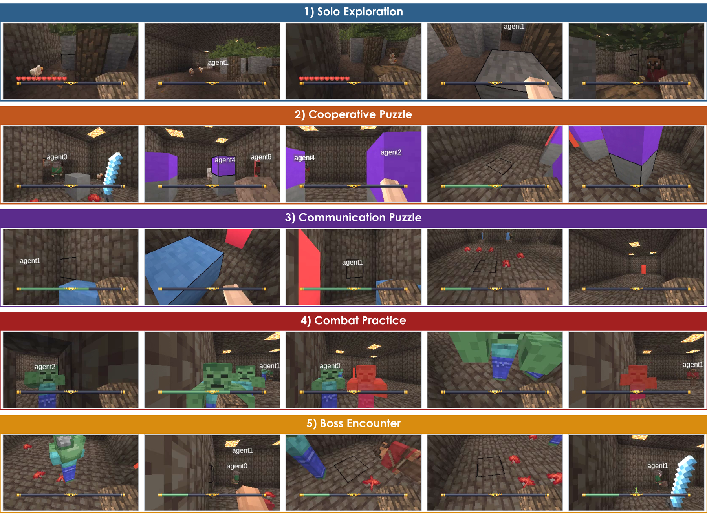
What an agent sees. First-person observations, one per chamber — 320×180 pixels, partner name tags, and nothing else.
Forming the graph, then using it
A multi-agent system is modelled as an adaptive social network: agents are nodes, directed pairwise relationships Wij(t) ∈ [0,1] are the edges, and reward is the modulatory signal. Social co-activity decides which relationships are eligible to change; later outcomes decide how much. The graph is learned independently of how it is used.
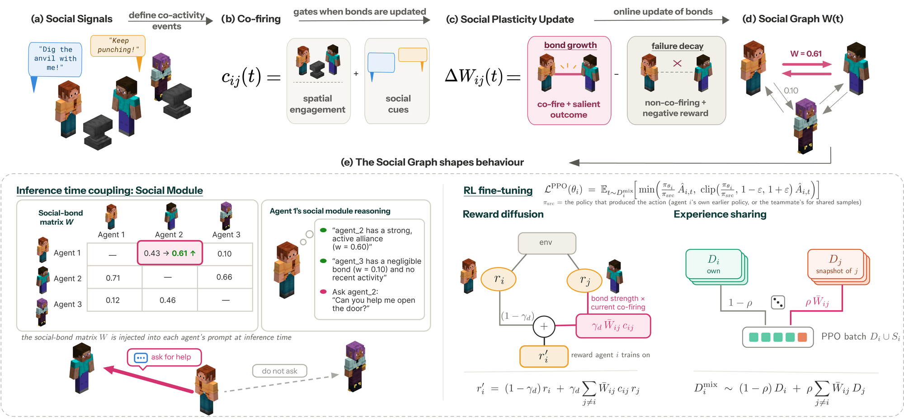
Formation. Explicit social acts — targeted communication, deliberate observation of a teammate, imitation of a requested action — plus engaged co-location define pairwise co-firing. Co-firing accumulates into an eligibility trace; reward acting on the trace consolidates the bond.
Co-firingDelayed consolidation
Co-firing decides eligibility
Meaningful interaction, not proximity alone, couples two agents. Proximity is gated by engagement and combined with explicit social acts; the observed or imitated teammate is told that the interaction happened. Which acts count is an experimental variable (RQ2), and it changes what the graph learns. Agents perform at most one social act per step.
Reward decides magnitude — later
Cooperative rewards are sparse, so an interaction often precedes the outcome it enabled. Each pair keeps an eligibility trace (ρe = 0.9); a milestone credits recent interaction, and a pair with no recent co-activity receives nothing. Death and would-die penalties produce signed decay through the same trace. An association floor still lets repeated co-firing build a weak bond without reward.
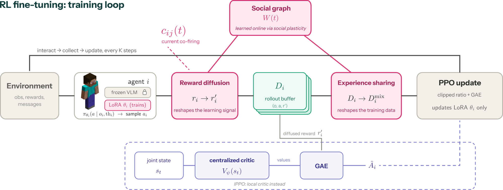
Use. For RL-fine-tuned agents, W(t) enters learning through reward diffusion and bond-gated experience sharing; for zero-shot VLM agents it conditions inference-time social deliberation.
Reward diffusionBond-gated experience sharing
Reward diffusion
A bonded partner's reward is mixed into an agent's own, in proportion to the row-normalised bond and gated by current co-firing, so credit flows along active relationships rather than across the whole team.
Bond-gated experience sharing
A fraction ρ of an agent's PPO batch is sampled from bonded partners' buffers, weighted by bond. Agents below the sparsity threshold contribute nothing.
Bond-conditioned deliberation
Zero-shot VLM agents receive their bond row at inference time: whom to address, whom to trust, whom to ask for help. No gradient, no coordinator, no global state.
What we found
Three questions: does the learned graph improve cooperation (RQ1), which interactions construct useful bonds (RQ2), and how memory and learned relational state carry social experience into long-term cooperation (RQ3)? Three agents, 1,000-step episodes, mean ± SD across seeds, each seed averaging its three episodes. Solo and Coop. % are agent-level completion rates over the eight Chamber 1 and the seventeen Chamber 2–5 milestones.
RQ1 · learning-time coupling0.8 → 3.5%
The clearest gains appear where the graph shapes learning. On Qwen3.5-2B, social plasticity raises cooperative completion under IPPO (2.9→3.3%) and MAPPO (1.5→2.9%); with Gemma-E4B IPPO it more than quadruples (0.8→3.5%). Gemma-E4B MAPPO is the exception (2.2→0.4%).
RQ1 · decentralised orchestration4.8% vs 4.7%
Against a compute-matched centralised orchestrator on Gemma-E4B, social plasticity reaches a higher task return (548 vs 505) with similar cooperative completion, without global state or task decomposition. The orchestrator assigns what each agent works on; the graph biases with whom.
RQ2 · interaction regimesW = 0.34, coop 2.6%
Communication is chosen most often (82.7% of social acts) and builds the strongest bonds, yet gives the lowest cooperative completion of any single cue. Observation and imitation stay close to spatial engagement alone (4.8% and 4.6% against 5.7%). With several cues enabled, communication crowds the others out.
RQ3 · exploit or explore0.55 vs 0.14
After team recomposition, agents that keep both memory and bonds exploit the previous partnership: over half their messages still go to the old partner. With bonds alone they balance exploitation and exploration, rewiring toward the collaborators the new task requires, with the highest task return and cooperative completion of the four transfer conditions (8.3% against 6.9%).
RQ1 — Effect of relational plasticity on cooperative task performance
Mean ± SD across seeds. † marks conditions below the six-seed target. Task return includes the communication stream. Bold: best within a backbone block.
(a) Zero-shot VLM agents
Condition
Task return ↑
Solo % ↑
Coop. % ↑
Qwen3.5-2B
358 ± 122
32.1 ± 5.0
4.6 ± 2.3
+Social plasticity
390 ± 109
30.3 ± 8.0
3.7 ± 1.7
Qwen3.5-9B
622 ± 88
40.9 ± 4.2
10.2 ± 3.1
+Social plasticity
599 ± 107
40.2 ± 2.8
9.0 ± 3.5
Gemma-E4B
521 ± 84
22.2 ± 2.3
4.4 ± 2.0
+Central orch.
505 ± 89
25.5 ± 4.1
4.7 ± 1.8
+Social plasticity
548 ± 86
26.5 ± 4.6
4.8 ± 1.9
(b) RL fine-tuned agents
Condition
Task return ↑
Solo % ↑
Coop. % ↑
Qwen3.5-2B IPPO †
425 ± 36
30.3 ± 3.3
2.9 ± 1.3
+Social plasticity †
467 ± 63
31.4 ± 4.0
3.3 ± 1.7
Qwen3.5-2B MAPPO
390 ± 56
31.1 ± 3.9
1.5 ± 1.3
+Social plasticity †
453 ± 92
31.8 ± 5.4
2.9 ± 2.5
Gemma-E4B IPPO
430 ± 70
21.5 ± 4.7
0.8 ± 0.6
+Social plasticity †
493 ± 159
22.2 ± 3.8
3.5 ± 2.0
Gemma-E4B MAPPO
380 ± 62
22.0 ± 5.2
2.2 ± 1.4
+Social plasticity †
334 ± 70
22.7 ± 5.2
0.4 ± 0.8
Relational state helps most when it shapes learning (b): social plasticity improves cooperative completion in three of four RL configurations. At inference time (a) the effect depends on the backbone: on Gemma-E4B it matches the baseline and the orchestrator in cooperation with the highest task return and Solo %, whereas it lowers performance on both Qwen backbones.
Relational plasticity acts as decentralised orchestration
A six-agent Chamber 4 kill with Gemma-E4B, the same milestone under both mechanisms. Top: learned bonds and orchestrator assignments; the star marks the kill, dots the attacks in the preceding ten steps, × a timeout and reassignment. Below: first-person frames and the messages exchanged.
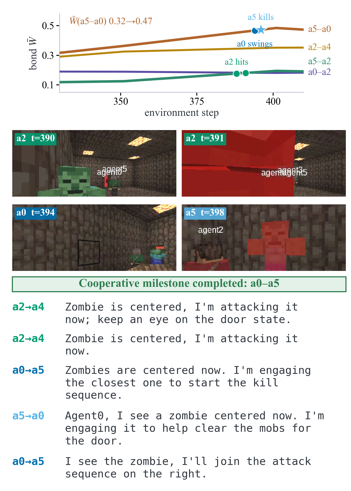
Relational plasticity. a0 and a5 converge on the same fight and jointly contribute to the successful kill as their bond strengthens (W: 0.32→0.47).
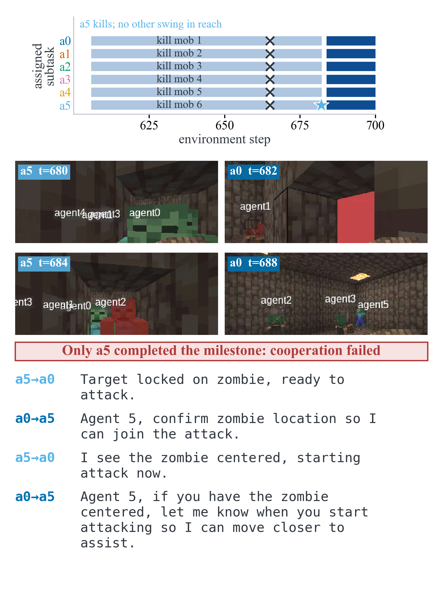
Central orchestration. Agents express an intention to collaborate, but without learned relational state this does not translate into joint execution: a0 does not join the fight and a5 secures the kill alone before reassignment.
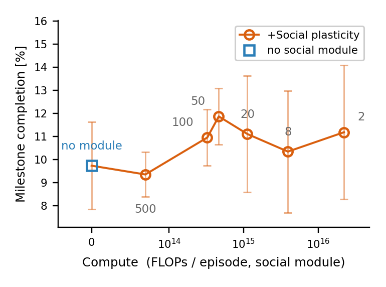
Deliberation interval against social-module compute (Gemma-E4B). Every interval from 2 to 100 steps completes more milestones than no social module; at 100 steps it needs roughly 12× less compute than the default of 8. All differences lie within one standard deviation.
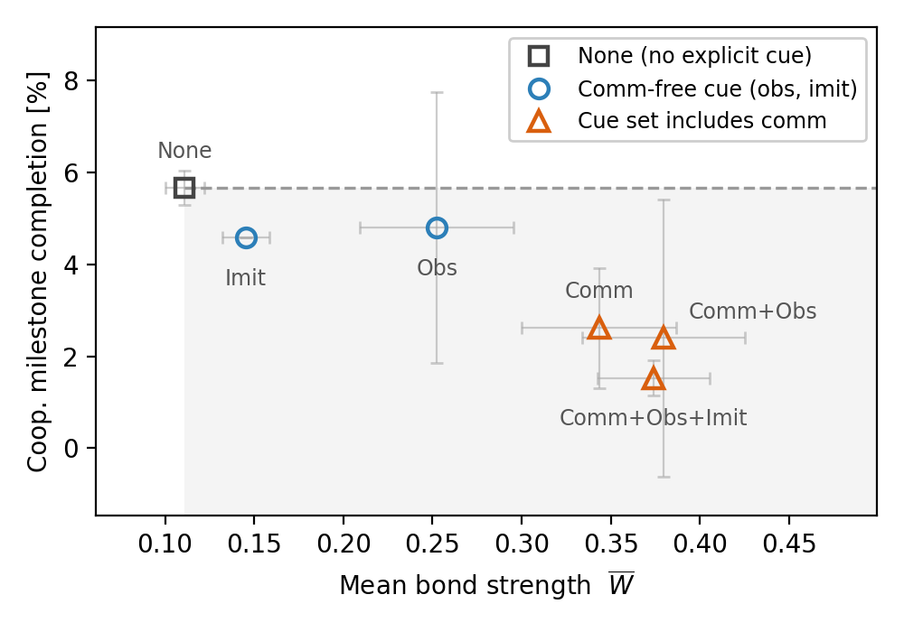
Bond strength does not buy cooperation: every explicit cue adds bond mass without adding cooperative completion over spatial engagement alone.
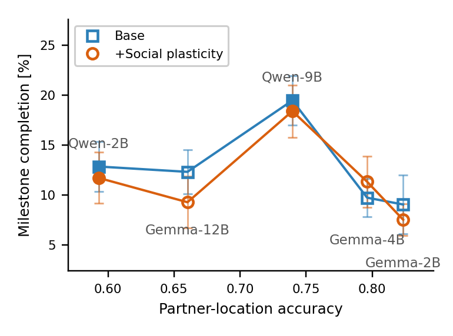
Zero-shot milestone completion against partner-location accuracy across five backbones, with and without social plasticity.
RQ3 — Memory and bonds after team recomposition
Pairs trained together in Chambers 1–2 are merged into a six-agent team that restarts at Chamber 3, where each agent's switch opens the door of an agent from a different pair. We vary what the agents keep from their first team; everything keeps updating afterwards. Partner preference is the share of an agent's messages sent to its former partner (chance 0.20); bond-implied is the same share read off the bond table at each episode start.
Condition
Memory
Bonds
Task return ↑
Coop. % ↑
Partner pref.
Bond-implied
Full transfer
kept
kept
237 ± 115
6.9 ± 2.3
0.55 ± 0.12
0.40
Memory only
kept
reset
128 ± 76
4.2 ± 1.1
0.18 ± 0.23
0.27
Bonds only
reset
kept
369 ± 63
8.3 ± 1.1
0.14 ± 0.14
0.31
Fresh start
reset
reset
271 ± 14
7.9 ± 0.7
0.34 ± 0.26
0.28
Gemma-E4B with social plasticity; one seed, mean ± SD over three episodes. Coop. % counts the twelve Chamber 3–5 milestones reachable from a Chamber 3 start; task return excludes message pay.
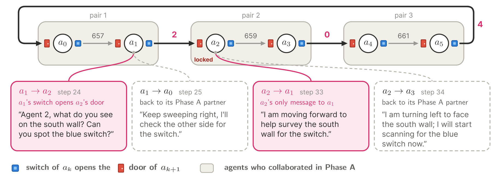
Retaining both memory and social bonds favours exploitation of previously successful partners. Full-transfer condition in Chamber 3. Grey arrows connect former Phase-A partners, while black arrows indicate cross-pair dependencies introduced by the switch task. Former partners exchange 657–661 messages, whereas task-relevant cross-pair links carry only 0–4, illustrating continued exploitation of established partnerships after team recomposition.
Retaining both episodic memory and bonds favours exploitation of previously successful partners, whereas retaining only bonds balances exploitation and exploration. The bond graph acts as a compact distillation of social experience while remaining plastic enough to rewire toward new collaborators.
Test-time scaling: more agents, bounded talk
New results. The same zero-shot Gemma-E4B agents, scaled at inference time from 3 to 15 per team, with each agent's messages capped at 600, 2,600 or 10,400 tokens per episode, or switched off (silent teams). Every agent gets the same prompt apart from its name, and nobody assigns roles or groups. A cell is three seeds of three episodes of up to 1,000 steps, with fewer seeds at N = 15.
Talking teams10 of 11 cells
When agents can talk, social plasticity completes more cooperative milestones than the baseline in 10 of the 11 budget × team-size cells that differ (4 tied; sign test p = 0.012). Silent teams show no consistent difference (3 of 5).
Same cooperation, fewer agentsN = 5 ≈ N = 7
Averaged over budgets, five agents with social plasticity reach 14.9%, which the baseline needs seven agents for. The gap narrows as teams grow: 18.0% against 17.6% at N = 10, 19.8% against 20.3% at N = 15.
Self-organised groups0.22 vs 0.15
Message networks split into communities beyond what a degree-preserving random graph gives. The structure grows with team size and is stronger with social plasticity at every size (modularity above the null at N = 15).
A hub, not a leader9–11 partners
At N = 15, agent 0 ends an episode with 9–11 distinct conversation partners, while the other agents average 2.5–2.9. It answers about one message in four within ten steps (others: one in two) and asks for direction itself.
Team coop. milestone completion: share of the 17 cooperative milestones (Chambers 2–5) reached by at least one agent of the team, averaged over a run's episodes; mean ± SE over seeds. It counts the team, unlike the per-agent Coop. % in the RQ1 table, so the two are not comparable.
Compute against cooperation
Budgets
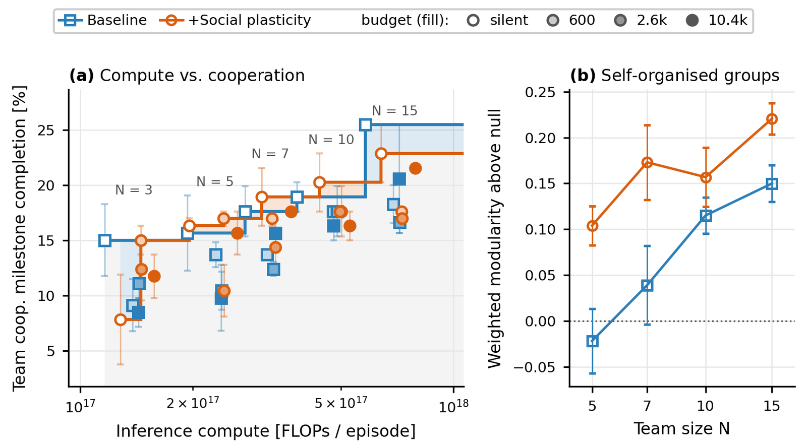
(a) Compute vs. cooperation. One point per arm, team size and budget (fill: budget). Compute is 2 × 4.5·109 × (prompt + generated tokens), summed over every model call of every agent in an episode. Dashed steps are each arm's Pareto front; the shaded region is dominated by the joint front. Among talking teams, the social-plasticity front is higher over 70% of the compute range and the baseline's over 8%. With silent teams included the split is 52% against 21%, and silent teams make up seven of the eight cells on the joint front. (b) Self-organised groups. Weighted modularity of the message network above a degree-preserving null. Compute is measured from token logs for 17 of the 40 cells. The rest are estimated from the tokens per agent-episode of the same arm and budget.
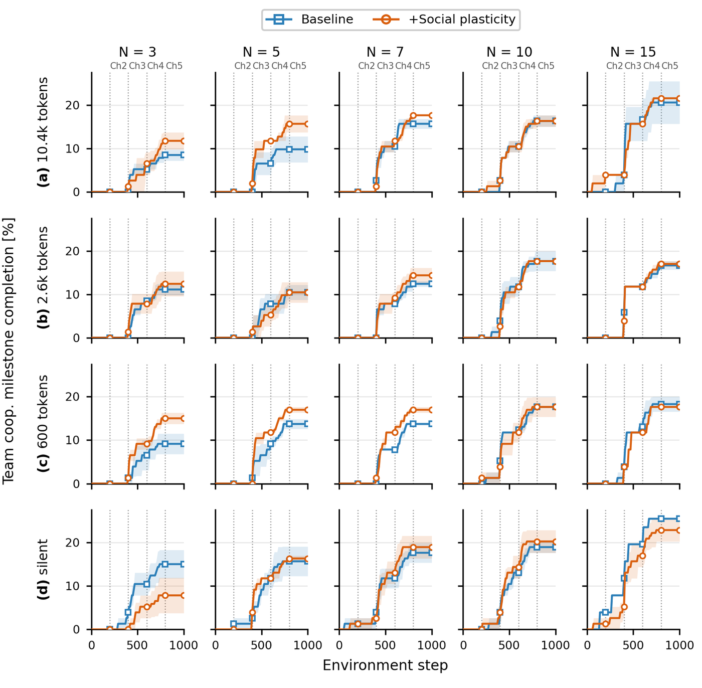
Completion over the episode, by budget (rows) and team size (columns); dotted lines mark the chamber boundaries. The clearest gap is at the tightest budget, 600 tokens, for three to seven agents, and it opens in Chambers 3 and 4. Silent teams of three are the one large reversal (15.0% against 7.8%).
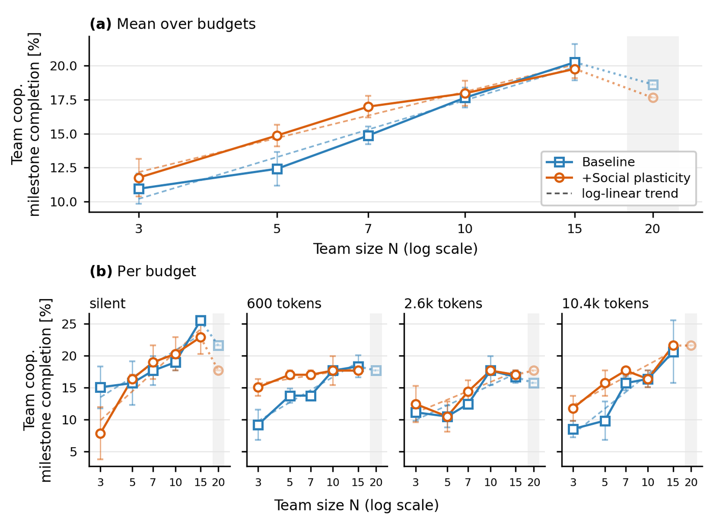
Episode-end completion against team size: (a) the mean over budgets with log-linear trends; (b) per budget. Completion rises with team size for both arms. N = 20 (shaded) is partial, with at most two seeds per cell and some budgets missing.
Who works with whom at fifteen agents
Every message is addressed to exactly one teammate, so the logs record who talks to whom. Without assigned roles, a hub forms around agent 0 and the rest of the team splits into small side groups. The agents differ only in their names.
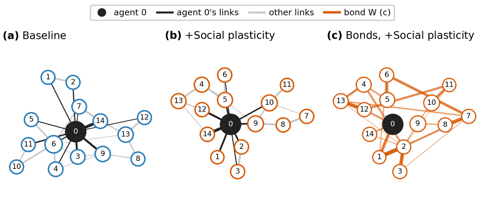
Whole-episode interaction networks at N = 15 (2,600-token budget), one episode per arm: the one closest to its cell's median Chamber 2 structure. Node size grows with distinct partners; agent 0 and its links are black. (c) The learned bonds of the same social-plasticity episode. Bonds partly follow the messages (Spearman ρ between Chamber 2 messages and bonds: +0.53 at N = 3, +0.27 at N = 15). They stay weak (mean 0.10–0.13 against a starting value of 0.1), and agent 0 holds ordinary ones.
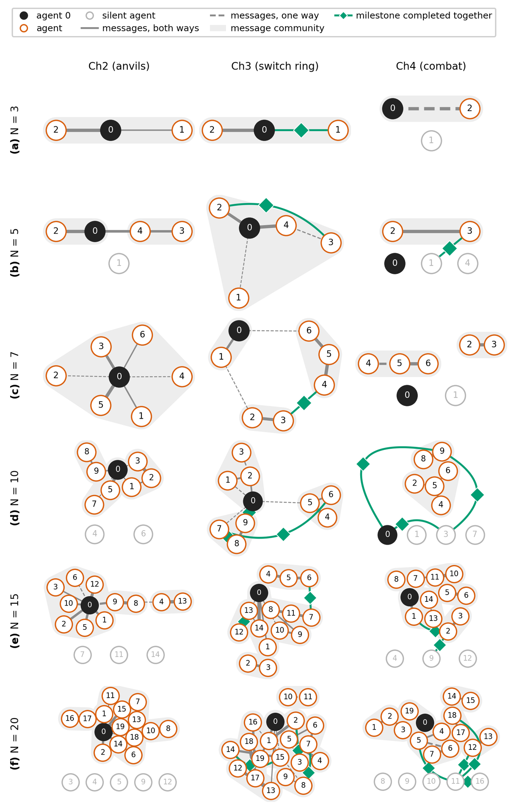
The network chamber by chamber as the team grows (social plasticity, 2,600 tokens). Grey areas are message communities. Green links join two agents credited for the same milestone event, almost always a Chamber 3 switch press and the door it opens.
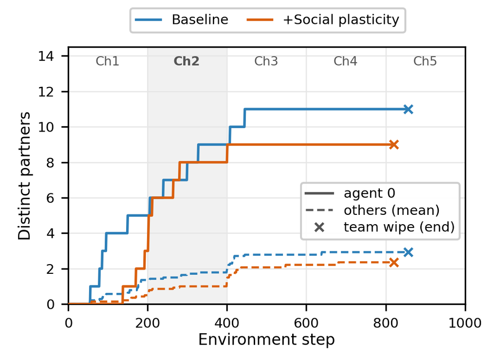
Distinct partners over the two episodes above: agent 0 (solid) against the mean of the other agents (dashed). × marks a Chamber 5 team wipe; the shaded band is Chamber 2.
Circles stay small
At every team size an agent keeps about 1.3 conversation partners in Chamber 2. Larger teams therefore split into more groups (one at N = 3, three to four at N = 15) rather than larger ones.
Talk partners are not task partners
Pairs that complete a milestone together are switch-ring neighbours, which the task fixes (93–100%). The share of them that had messaged each other in Chamber 2 falls from 67–69% at N = 3 to 15–29% at N = 15.
Talk does not reach the task
Silent teams break a Chamber 2 anvil in 13 of 81 episodes, messaging teams in 5 of 234. Agents press their Chamber 3 switch about as often without messages as with them (21.5% against 23.8%).
Watch the team organise, from 3 to 15 agents
One episode per arm and team size at the 2,600-token budget, the one closest to its cell's median Chamber 2 structure (at N = 15, the two episodes above), each from its first step to its last in about 16 seconds. Agents are blocks that grow with their number of distinct partners; the four with the most partners at the end become ore blocks. A message lights its link up like redstone, and two agents credited for the same milestone burst with green orbs. The windows on the right show the share of agents with at least k partners against random graphs with the same number of links, and partner counts over time. The Network view draws the same data as a plain chart.
Agents
View
Gemma-E4B no social layer
No learned bonds: whom to message is left to the prompt and each agent's own reasoning.
N = 15 · 2,600 tokens per agent · seed 42, episode 1
Gemma-E4B +Social plasticity
Each agent also receives its row of learned bonds when it decides whom to address.
N = 15 · 2,600 tokens per agent · seed 123, episode 1
Coordination, condition by condition
The same environment under the paper's conditions — zero-shot backbones with and without the graph and against the orchestrator, the RL fine-tuned lanes, and the six-agent teams — at the moments the qualitative analysis examines. Each clip opens with every agent's first-person view side by side — labelled top-left of each panel, in the same colours as the transcript — cut to the exact step window the figures annotate; the button on the clip narrows it to the agents contributing to the action. Successes and failures are both here on purpose: the failures are where the difference between the conditions is legible. The gallery holds the wider set, mined from every episode.
Agents
Outcome
Zero-shot VLM agents — the graph enters inference
Qwen3.5-9B no social layer
agent 1agent 2
agent 0agent 1agent 2
Anvil broken by agreement success
a2 states the rule — two agents, same anvil, same step — a1 names the right-hand anvil, and both dig it together. The anvil breaks.
episode 2, steps 198–222 · agents 1 & 2
Messages, step-synced — click one to jump
t195a0→ a1I am starting to dig the front anvil. Agent_1, please dig the same anvil to break it cooperatively.
t195a1→ a2I am digging a stone block here to help with the Ch1 milestone. Keep an eye on the area for drops.
t195a2→ a0I'm turning to find the open door to Chamber 2, keep working on the anvil.
t196a0→ a1I am Digging the anvil now, please continue Digging the same anvil with me to break it.
t196a1→ a2I'm digging stone here. I'll collect the drop and need to find the tree trunk you mentioned.
t196a2→ a0I'm turning to find the stone block for the Ch1 milestone. I'll let you know once I'm ready to dig.
t197a0→ a1I am facing the front anvil and Digging. Agent_1, please start Digging this anvil with me so we can break it together.
t197a1→ a2agent_2, I am digging stone to reach the Ch1 milestone. Keep digging the tree trunk when you are ready.
t197a2→ a1I am turning left to find the stone block for the milestone. I will collect the drop once broken.
t198a0→ a2I'm Digging the anvil you are on (Row B). Please Dig it too so we can break it together.
t198a1→ a2I'm digging the stone block here for the milestone, will collect the drop.
t198a2→ a0I see a wall blocking my view, need to find the open door to exit to Ch2. I'll look for it now.
t199a0→ a1I'm digging the front anvil now, need another agent to dig it too to break it.
t199a1→ a2agent_2, I'm turning to find the tree trunk. I'll Dig it once I center it.
t199a2→ a1agent_1, I see you are in ch1 digging a stone block. I am turning to find a stone block to dig for the milestone.
t200a0→ a2I am breaking the wall blocking my path. I will move forward once it is clear.
t200a1→ a0agent_0, I am turning right to face the anvils now.
t200a2→ a0I am turning to the anvil to help break it with you.
t201a0→ a1I am moving backward to clear the wall ahead. I will turn and approach the anvils now.
t201a1→ a0agent_0, I am turning to find the anvil to help you break it.
t201a2→ a0agent_0, I'm centering on the anvil now, ready to Dig together.
t202a0→ a1I am turning right to find the anvils; please locate them too and prepare to dig cooperatively.
t202a1→ a0I am moving to assist with the front anvil. Please hold your position so we can break it together.
t202a2→ a0I am turning to face the center room to locate the anvils for cooperative breaking.
t203a0→ a1I am centering on the front anvil to start the cooperative break with you.
t203a1→ a0I'm centering the front anvil to start our cooperative dig.
t203a2→ a0I am breaking a stone block here. I will move forward once it is clear.
t204a0→ a1I'm facing a wall, need to turn left to find the door.
t204a1→ a0I am in Ch5 facing a wall; turning to find the boss.
t204a2→ a1I'm finding the grey stone block in Ch2 and digging it now.
t205a0→ a1I am starting to dig the front anvil (sword anvil). Please dig it too so we can break it together.
t205a1→ a0I see an anvil centered here, but the task is to find a tree trunk. I need to turn around and scan the room for the brown tree. Who is in this chamber with me?
t205a2→ a0agent_0, I am Digging the stone block ahead as per the Critique.
t206a0→ a1I see the anvil centered. Let's dig it together to break it.
t206a1→ a0I see the anvil on the left now, turning to center it for the cooperative dig.
t206a2→ a0I see the anvil on the right. I will turn to center it and start punching it to break it.
t207a0→ a1I see the red door ahead, slightly right. I will center it and MoveForward to check if it's the exit or if I need to dig something else first.
t207a1→ a0I am centering on the front anvil to dig it with you. Let's start punching it together.
t207a2→ a1I'm here near the anvils. Remember, we need TWO agents Digging the same anvil simultaneously to break it. Let's coordinate.
t208a0→ a1I am turning left to avoid the wall and moving forward. I will check for the red door ahead.
t208a1→ a2I'm centering the anvil now. Ready to start the cooperative dig with you.
t208a2→ a1I see the anvils. I'll position myself to break the right one with you.
t209a0→ a1I am turning to face the open area to locate the anvils. I will then move forward to join agent_1 at the front anvil.
t209a1→ a2I am digging the right anvil. Please ensure you are also Digging it simultaneously to break it.
t209a2→ a1I am digging the anvil now, please dig the same one with me to break it cooperatively.
t210a0→ a1I am turning right to find the open area with the anvils. I will move forward once I see the path.
t210a1→ a0I see the red door centered. Turning to face the open area to locate the anvils for cooperative breaking.
t210a2→ a1I'm turning right to face the anvil. Ready to dig with you.
t211a0→ a1I am turning to find the anvils. Let's coordinate to break them together.
t211a1→ a2I don't see a tree here, turning left to scan the area.
t211a2→ a1I'm turning left to find the stone block. Please focus on the anvil.
t212a0→ a1I am in a dark corridor. I need to find the open area with the anvils. I will turn right to locate the exit or the room center.
t212a1→ a0I see the red door and will attempt to break it. Agent_0, please assist if possible.
t212a2→ a1agent_1, I am turning to face the anvil to start the cooperative dig with you.
t213a0→ a1I am facing a wall, turning left to find the anvils. I will move forward once I see the open area.
t213a1→ a2I am turning right to find the anvils so we can break them and open the door.
t213a2→ a1I am digging the right anvil now to help break it.
t214a0→ a1I am facing a bedrock wall and cannot move. Turning to find the open area with the anvils. I need to locate them to break cooperatively with you.
t214a1→ a0I am turning right to find the tree trunk in Ch1. Once found, I will dig it.
t214a2→ a1I'm on the anvil now, dig with me!
t215a0→ a1I see a door ahead, but need to turn to find a clear path. I will turn right to check the door or find the open area.
t215a1→ a2I'm digging the anvil now, keep digging with me!
t215a2→ a1I am facing the anvil and Digging. Keep Digging with me to break it.
t216a0→ a1I am turning left to face the open area where you and agent_2 are. I will move forward to join you at the anvils.
t216a1→ a2I am Digging the anvil. Keep Digging to break it.
t216a2→ a1I'm turning to face the anvil, ready to dig with you.
t217a0→ a1I am moving forward to clear the stone block. Please assist with breaking anvils when you reach them.
t217a1→ a2I'm digging the anvil now, keep it up.
t217a2→ a1I am Digging the anvil with you, keep digging!
t218a0→ a1I am turning left to find a clear path forward. The wall ahead is blocking me, so I need to change direction.
t218a1→ a0I see the anvil to my right, turning to face it for cooperative breaking.
t218a2→ a1Digging the anvil now to break it with you!
t219a0→ a1I am digging the stone block ahead to move forward towards the anvils.
t219a1→ a2Digging the anvil with you, let's keep it up to break it faster!
t219a2→ a1I am Digging the stone block. Keep Digging the anvil.
t220a0→ a1I am facing a wall, turning right to face the open area and locate the anvils for cooperative breaking.
t220a1→ a2I am turning right to find the tree trunk. Keep digging the anvil.
t220a2→ a1I'm facing a wall here, trying to find the anvil you mentioned.
t221a0→ a1I am facing a wall and turning left to find the anvils. Please check your position and let me know if you see the anvil in front of you.
t221a1→ a2I see the red door centered. I'm moving forward to check its status. If it's locked, we need to break the anvils first.
t221a2→ a1I see stone in the center, not the anvil. Turning right to find it.
t222a0→ a1I am turning right to avoid the wall and find the anvils in the center.
t222a1→ a0I see the door is centered. I am turning around to face the anvils as per the room facts. Please check your orientation too.
t222a2→ a1I see a wall centered, need to find the grey stone block. You keep digging the anvil.
agent 0agent 1
agent 0agent 1agent 2
Combat split by agreement success
“Keep attacking the other one.” The two zombies are divided in a single exchange, and each agent stays on the one it claimed.
episode 1, steps 618–640 · agents 0 & 1
Messages, step-synced — click one to jump
t615a0→ a1agent_1, I am engaging the zombie in Ch4. Keep the door open.
t615a1→ a0I'm hitting the zombie at the door, keep the door open.
t615a2→ a1Ch4 has no trees. I see you (agent_1) here. We need to find the zombies to open the door.
t616a0→ a2I'm attacking the zombie, keep moving forward to locate the others.
t616a1→ a2agent_2, I see a wall ahead, checking the left side for the opening.
t616a2→ a0I'm turning left to find the tree trunk. Keep attacking the zombie in Ch1.
t617a0→ a1I am engaging the zombie at the door.
t617a1→ a0I see you, agent_0. Let's move forward into the communal room to find the anvils.
t617a2→ a0I am turning left looking for the tree trunk, keep searching.
t618a0→ a1Zombie is right in front of me, I'm attacking it with the sword.
t618a1→ a2I see the zombie is right here. I'm turning to center it for an attack.
t618a2→ a0I am turning left to find the tree trunk. I will dig it once I locate it.
t619a0→ a1I am attacking the zombie here, keep your focus on the other zombies.
t619a1→ a0agent_0, I am scanning the area in Ch1, looking for an open door or target.
t619a2→ a1I see a red wall ahead, turning left to find the tree.
t620a0→ a1agent_1, keep attacking your zombie so we can open the door to Ch5.
t620a1→ a0I see you at the door, heading forward to check the path.
t620a2→ a0I am still looking for the opening in this room. I see a solid wall ahead.
t621a0→ a1I am attacking the zombie in front of me. We need to kill all 3 to open the door.
t621a1→ a2I am moving forward to find the exit. Keep your door open.
t621a2→ a1I see the red locked door ahead, turning left to find the tree trunk as per the task.
t622a0→ a1I am engaging the zombie in front of me. Keep looking for the other zombies to help us clear the room faster.
t622a1→ a0I see a wall ahead, turning left to find a zombie. I'll attack it once I spot it.
t622a2→ a0I am turning right to find the opening. Keep your door open.
t623a0→ a1I am attacking the zombie in front of me. Keep working on yours.
t623a1→ a2Agent_2, I am engaging the zombie at the door. Please focus on the other zombies to help us clear the room faster.
t623a2→ a1I am turning left to find the tree trunk. Keep your door open.
t624a0→ a2I am attacking a zombie with agent_2 nearby. Keep looking for other zombies.
t624a1→ a0I am engaging the zombie on the left. Focus on yours.
t624a2→ a0I am looking for a tree trunk to dig. Do you see one?
t625a0→ a1I'm hitting the zombie now, help me out!
t625a1→ a0I am moving forward in the corridor. Keep your door open.
t625a2→ a1I am turning left to find the tree trunk in Chamber 1. Keep the door open if you are there.
t626a0→ a1I am attacking a zombie, let's focus on killing it quickly.
t626a1→ a0I am turning right to move past the wall blocking my path.
t626a2→ a0I am turning left looking for the tree trunk in Ch1. Keep looking for the exit or other objectives.
t627a0→ a1I am attacking a zombie in front of me. Agent_1 is also here, we should focus on killing the remaining zombies quickly to open the door.
t627a1→ a0I'm moving in to help clear the zombies.
t627a2→ a0I am turning towards the tree trunk now.
t628a0→ a1I am turning right to find a zombie to attack.
t628a1→ a0I am looking for a zombie to attack.
t628a2→ a0I am turning to locate the tree trunk. I will dig it once found.
t629a0→ a1I see you agent_1, we need to find the zombies to open the door to Ch5.
t629a1→ a0I am moving forward to join the fight. I will attack a zombie once I reach them.
t629a2→ a1I am turning right to find the doorway in Ch1. Please focus on zombies in Ch4.
t630a0→ a1I am turning left to face the zombies. I will start attacking them once they are centered.
t630a1→ a0I am attacking the zombie you see. Keep attacking the other one.
t630a2→ a1I am scanning the room for the tree trunk. Please focus on the zombies at the door.
t631a0→ a1I am turning right to find an open space. I will attack a zombie once I locate one.
t631a1→ a0I am turning right to scan for the zombies. Keep attacking yours.
t631a2→ a0I am facing the red door. Turning left now to locate the tree trunk you mentioned.
t632a0→ a1I am attacking the right zombie. Keep on yours.
t632a1→ a0I am clearing a stone block to move forward. Agent_0, please continue focusing on the zombies.
t632a2→ a0I am turning to locate the tree trunk.
t633a0→ a1I am attacking a zombie. agent_1, please attack the other zombie to help clear the room faster.
t633a1→ a0I see the door is locked; I'm turning right to find the zombies you mentioned.
t633a2→ a0I am turning right to locate the tree trunk.
t634a0→ a1Zombie is dead or dying, keep attacking it.
t634a1→ a0I am hitting the left zombie. Keep attacking yours.
t634a2→ a1I am turning left to search for the brown tree trunk. I will keep you updated once I find it.
t635a0→ a1I am engaging the zombie at the center. Keep attacking yours.
t635a1→ a0I am attacking the zombie, keep the door open for us to clear the room.
t635a2→ a1I'm turning to find the tree trunk, will report back once located.
t636a0→ a1I'm attacking the zombie in front of me. Keep hitting yours.
t636a1→ a0I am centering my zombie to attack. Keep yours!
t636a2→ a1I am turning left to find the tree trunk. Keep looking for zombies if you see any.
t637a0→ a1I am attacking the zombie, keep the door open for us to clear the room.
t637a1→ a0I see a wall in front, turning to the door. I'm heading to the communal room to find the zombies.
t637a2→ a1I am turning to find the tree trunk; please keep engaging the zombie at the door.
t638a0→ a1I'm centering on a zombie, ready to attack. Keep yours!
t638a1→ a0I see a wall in front of me, need to turn left to find the zombie. I'll attack it once located.
t638a2→ a1I am looking for the tree trunk, agent_1. I see you at the door, please hold the position.
t639a0→ a1I'm turning left to face the open room. I'll look for the zombies and start attacking them. Let me know if you see any zombies!
t639a1→ a0I am turning to find the opening to the communal room. I will hold the door once I find it.
t639a2→ a0I am activating the Cell Switch in Ch3. Team, check your positions and let's move forward to the next door.
t640a0→ a1I am attacking a zombie now.
t640a1→ a0I'm scanning left for the exit gap. Hold your ground.
t640a2→ a0I see a red switch ahead; turning left to find a tree trunk for M4. Need help with mobs later.
agent 1agent 2
agent 0agent 1agent 2
Everyone is attacking; nothing dies failure
“I see a zombie at my feet, equipping sword and attacking it now.” — “I'm attacking a zombie at close range, keep your focus on the other one.” The zombies are right there in both views; the chamber's 200 steps run out without a single kill.
t755a0→ a1I'm turning 180 degrees to find the red door, stay alert for zombies.
t755a1→ a2I see a zombie at my feet, looking down to center it and attack.
t755a2→ a1I'm moving past you to find the open door to the communal room.
t756a0→ a1I'm facing a wall, turning left to find the zombies and the red door.
t756a1→ a2I'm equipping the sword to attack the zombie you spotted. Keep it focused.
t756a2→ a1I am scanning left for the exit door while you fight the zombie.
t757a0→ a1I am turning right to find the red door; watch out for zombies while I rotate.
t757a1→ a0I'm facing a wall, turning right to find the zombies and the red door.
t757a2→ a1I see a zombie at my feet. Equipping sword and attacking it now.
t758a0→ a2I'm turning left to face the red door on the north wall. Don't turn right yet, I need to find the zombies and the door.
t758a1→ a2I see a zombie at my feet. Equipping sword and attacking it now.
t758a2→ a1I'm attacking a zombie at close range. Keep your focus on the other zombies.
t759a0→ a1I'm breaking the block ahead to clear the path.
t759a1→ a0I am attacking the zombie in front of me. Keep attacking the other zombies.
t759a2→ a0I'm turning around to face the open room; you focus on the zombies.
t760a0→ a2I am turning right to find the red door; you focus on the zombies.
t760a1→ a2I'm on the zombie, taking it down now.
t760a2→ a1I am turning to face the path to the communal room, please watch for the zombies.
t761a0→ a1I'm scanning for zombies; I see a wall here. Keep attacking your target!
t761a1→ a2I see a stone block ahead but it's likely a wall. I'm turning to find the remaining zombies you mentioned.
t761a2→ a0I'm turning to find the open door or the remaining zombies.
t762a0→ a1I'm turning to find the zombies and the red door; focus fire on any zombies that appear while I turn.
t762a1→ a0I'm engaging the zombie directly ahead. Keep your focus on the other two zombies!
t762a2→ a0I'm turning away from the wall to find the zombies.
t763a0→ a2I'm looking at the ceiling, need to look down to find the door.
t763a1→ a2I'm attacking the left zombie; focus on the right one.
t763a2→ a0I'm turning right to find the open door to the communal room. Keep attacking the zombies.
t764a0→ a2I'm turning right to find the red door. Watch for zombies while I do that.
t764a1→ a2I'm attacking a zombie here. Keep focusing on yours!
t764a2→ a1Focus on the right zombie, I will assist with the left one.
t765a0→ a1I'm turning right to locate the zombies in Ch4 before opening the door.
t765a1→ a0I'm turning to face the zombies and the red door; focus fire on any zombies that appear while I turn.
t765a2→ a1I'm backing away from the wall. Keep attacking your zombie!
t766a0→ a1I'm turning right to center the red door. Watch for zombies as we approach the door.
t766a1→ a2I'm aligning with the zombie to attack it.
t766a2→ a0I am turning to face the open area. Watch for zombies!
t767a0→ a1I am still facing a wall after turning right; I will keep turning right to locate the red door or opening. Be ready to attack zombies if they appear while I search.
t767a1→ a2I'm attacking the zombie directly in front of me now.
t767a2→ a0I am breaking the wall block here to clear the path. Watch out for any mobs behind it!
t768a0→ a1I am turning right to find the red door. Watch for zombies!
t768a1→ a2I'm turning left to center a zombie. I'll focus fire it with you.
t768a2→ a0I'm looking down to face the floor and move forward.
t769a0→ a2I'm scanning the wall for the red door; keep focus on the zombies.
t769a1→ a2I have the diamond sword (Slot1) ready. I'm about to attack the zombie. I will focus fire on the remaining zombies.
t769a2→ a1I'm turning to face West to move towards the communal room area.
t770a0→ a2I see a wall ahead, looking for zombies or the red door. Any zombies spotted?
t770a1→ a2I'm attacking the zombie ahead. Agent_2, if you are near another zombie, focus fire on it!
t770a2→ a1I'm looking at the floor, need to find the zombies. agent_1, where are you targeting?
t771a0→ a1I see a zombie centered and am attacking it. I will focus fire on the first zombie to reduce the threat.
t771a1→ a0I am attacking a zombie now, focus fire if you see another.
t771a2→ a1I'm clearing a block in front of me to move forward. Keep attacking your zombie!
t772a0→ a1I am turning right to find the zombies in Ch4.
t772a1→ a0I have a zombie centered and am attacking it. Focus fire on your zombie!
t772a2→ a0I'm turning to face the open door, clearing the path for you two.
t773a0→ a1I'm turning right to face the wall, look for the red door.
t773a1→ a2I see a zombie centered. Switching to sword to attack it now.
t773a2→ a1I'm turning left to face the zombies. I'll start attacking them.
t774a0→ a1I'm turning right to face the door, keep your focus on your zombie.
t774a1→ a0I'm turning right to face the zombies to attack them.
t774a2→ a1I'm turning to face the communal room area. I see a zombie ahead, I'll help clear it!
t775a0→ a1I'm turning right to find the zombies, agent_1 focus fire them.
t775a1→ a2Agent_2, I am switching to my diamond sword to focus fire on the zombie ahead.
t775a2→ a1I am turning to find the door. I will focus fire on the remaining zombies once I see them.
t776a0→ a1I'm turning right to locate the red door; I'll focus fire on zombies once found.
t776a1→ a2I am attacking the zombie now, keep tracking yours.
t776a2→ a1Agent_1, I see a zombie centered. I will start attacking it now to help clear the path.
t777a0→ a1agent_1, I'm still turning to find the open door, keep attacking that zombie.
t777a1→ a2I am attacking the zombie in front of me.
t777a2→ a1I am attacking the zombie ahead, focus fire on the other one.
t778a0→ a1I see the red door to my right, turning to center it and approach.
t778a1→ a2I am attacking the zombie in front. Keep attacking the other ones.
t778a2→ a1I am attacking a zombie, keep yours.
t779a0→ a1I'm facing a wall, turning right to find the open door to Ch5.
t779a1→ a2Agent_2, I am engaging the zombie at center, take the next one.
t779a2→ a1Keep attacking the other zombies to clear the room faster.
t780a0→ a1I'm turning left to find the exit/zombies; you two, check your positions.
t780a1→ a0Agent_0, I'm attacking the zombie at center. Keep moving to the next zombie after this one.
t780a2→ a1I'm switching to the sword to attack the zombie in front. Keep engaging the other one.
t781a0→ a2I see the red door to my left, turning right to center it for you to pass.
t781a1→ a2I am engaging the zombie at center. Keep attacking the other one!
t781a2→ a1I'm attacking the zombie at center. Keep focusing on the others.
t782a0→ a1I'm turning right to find the red door to Chamber 5.
t782a1→ a2I'm engaging the zombie at center. Keep focusing on the others.
t782a2→ a1I see three zombies blocking the path. I will turn to find the door. Keep attacking the zombie you are facing!
t783a0→ a1I am in a narrow corridor and moving forward to find the exit to the communal room.
t783a1→ a2I am attacking the zombie at center, keep focusing on yours!
t783a2→ a1I am attacking the zombie at center. Keep focusing on yours!
t784a0→ a1I'm facing a wall after turning too far. Looking up to find the open passage to the communal room. Keep attacking the zombies.
t784a1→ a2I'm on a zombie, keep going on yours!
t784a2→ a1I am moving forward to clear the stone block and find the door. Keep attacking the zombie!
t785a0→ a1Looking down to find the zombies and the door.
t785a1→ a2agent_2: I am hitting the zombie at the center. Keep attacking yours!
t785a2→ a1I am turning right to find the door, you focus on the zombie.
t786a0→ a1Agent_1, I'm at a wall. I need to turn to find the zombies or the exit. What direction are you facing?
t786a1→ a2I'm attacking the zombie at the center, keep focusing on the others.
t786a2→ a1I am turning to find the door, keep attacking your zombie!
t787a0→ a1I am looking up to find the doorway; please keep attacking the zombies.
t787a1→ a2Agent_2, I am focusing on the zombie in front of me. Keep attacking yours!
t787a2→ a1I am attacking the zombie at the center. Keep attacking yours!
t788a0→ a1I see zombies on the floor. I'm turning to face them. Keep attacking your target!
t788a1→ a2I am switching to my sword now. Keep attacking yours!
t788a2→ a1I'm turning right to check for the door, keep attacking your zombie!
Gemma-E4B +Social plasticity
agent 0agent 1
agent 0agent 1agent 2
Switch pressed on request success
a0 reports it is stuck and asks a1 to watch the door; a0's own press opens a1's door. The release is one-way — a0 stays locked in.
episode 1, steps 433–452 · agents 0 & 1
Messages, step-synced — click one to jump
t430a0→ a1Still locked here
t430a1→ a0Scanning south wall now, let me know if you see the blue switch
t430a2→ a0Turning right now to face south wall; check if you see the switch from your angle.
t431a0→ a1I am moving forward now to get a better view of the area where you are scanning the south wall.
t431a1→ a0I'll move forward to scan the cell walls for the switch location.
t431a2→ a0I'm moving forward now; check if you see the switch from your angle.
t432a0→ a2I am turning to face the south wall where the switch is; check if you see it from your angle.
t432a1→ a0Scanning south wall for switch
t432a2→ a0I am moving forward to check the cell layout for the switch location.
t433a0→ a1I'm turning to sweep the cell walls, looking for the blue switch on the south wall.
t433a1→ a0I am moving forward now to try and locate the switch or the main area.
t433a2→ a0Still scanning south wall for switch cues.
t434a0→ a1I'm moving forward to check the corridor ahead.
t434a1→ a0Agent 0, I'm turning left to scan the walls, let me know if you see the switch.
t434a2→ a0I am moving forward to try and get a better look at the south wall for the switch cue.
t435a0→ a2I'm turning right to scan the corridor walls, let me know if you see any switch cues on your end.
t435a1→ a0I'm turning right to check the wall area, looking for the switch.
t435a2→ a0I am moving forward to check the south wall area for the switch cues you mentioned.
t436a0→ a1Moving forward now, watching for the switch or a doorway.
t436a1→ a0Agent 0, I am turning left to scan the cell walls for the switch.
t436a2→ a0I'm turning to face the south wall now, looking for the blue switch cue you mentioned.
t437a0→ a1I am waiting for the switch press. Let me know when you see it.
t437a1→ a0Still in cell, looking for the south wall switch.
t437a2→ a0I am moving forward to get a better look at the south wall for the switch.
t438a0→ a2I'm moving forward to sweep the corridor; let me know if you see any change in the wall structure on your side.
t438a1→ a0I'm scanning the walls here, looking for the blue switch or door state change.
t438a2→ a0I'm moving forward, check if you spot the switch on the south wall from here.
t439a0→ a1Still stuck in cell. Check door state if you see any change.
t439a1→ a0I am moving forward to find the anvils; let me know if you see the switch status change.
t439a2→ a0I'm still scanning the walls for any switch cues on my end.
t440a0→ a2I'm moving forward to check the cell walls for the switch location.
t440a1→ a0I am turning to find the south wall switch, let me know if you see any door changes.
t440a2→ a0Still scanning walls for any switch cues on my end.
t441a0→ a1Blue cube is right; I'm turning to face it now.
t441a1→ a0I am moving forward now to see the south wall for the switch.
t441a2→ a0Still scanning my side for any wall changes near the switch location.
t442a0→ a1Blue switch is centered. I will press it now.
t442a1→ a0I'm turning right to face the blue cube; let me know if you see any door change.
t442a2→ a0Still scanning walls, no blue switch visible from my side yet.
t443a0→ a1I am digging the blue cube now; check if your door state changed.
t443a1→ a0Door is open, moving north now
t443a2→ a0Still scanning walls for switch cues here.
t444a0→ a1Digging switch now, need door open for me
t444a1→ a0Door state update?
t444a2→ a0Maintaining position, ready to scan for switch cues on my side.
t445a0→ a2Digging switch now. Need Agent 2 to press theirs to open my door.
t445a1→ a0Door state check needed
t445a2→ a0I'm turning right to scan the wall structure here, let me know if you see any change on your end.
t693a0→ a1Moving forward to join the fight. Focus on the zombies!
t693a1→ a0Zombie centered, attacking now.
t693a2→ a0Zombie centered, I'm attacking to join the fight in Ch4.
t694a0→ a1Zombies are here, I'm turning to engage.
t694a1→ a0Zombie centered, continuing to attack. Focus fire!
t694a2→ a0Zombie centered, continuing assault.
t695a0→ a1Moving forward to join the fight, keep focusing on the zombies!
t695a1→ a0Zombies are centered, I'm attacking. Focus fire!
t695a2→ a0Focusing on the zombie here; let's coordinate on targets.
t696a0→ a1Moving closer to the fight; watch for the zombies.
t696a1→ a0Zombies here, focusing fire on center target.
t696a2→ a0Zombie centered, attacking now.
t697a0→ a1I'm moving forward to get closer to the zombies.
t697a1→ a0Attacking zombie now. Keep focus fire on the mobs!
t697a2→ a0Zombie centered, keep attacking it.
t698a0→ a1I'm moving forward to meet the mobs; keep focus fire on the zombies.
t698a1→ a0Zombie centered, I'm attacking now.
t698a2→ a0I am attacking the zombie here; watch for damage confirmation.
agent 0agent 1
agent 0agent 1agent 2
Wait, press, exit success
An explicit wait-and-press exchange: a1 holds at its door, a0 finds and digs the switch, the door opens.
episode 3, steps 399–412 · agents 0 & 1
Messages, step-synced — click one to jump
t396a0→ a1I'm moving forward now, heading towards Anvil A. Ready to coordinate the hit.
t396a1→ a0Moving forward now to meet you at Anvil A.
t396a2→ a0Turning right to find the center path; let me know when you see the anvils.
t397a0→ a1I am moving forward to meet agent_1 at Anvil A.
t397a1→ a0Still moving towards center, look for anvils.
t397a2→ a0Moving forward now to meet you near Anvil A.
t398a0→ a1Approaching center to assist on Anvil A.
t398a1→ a0Moving forward to meet you at Anvil A. Ready to coordinate the hit.
t398a2→ a0Turning right to find the path to the anvils, meeting you near Anvil A.
t399a0→ a1I am moving forward now; I expect to reach the center path soon to meet Agent 1 at Anvil A.
t399a1→ a0Moving toward center path now.
t399a2→ a0Moving forward now to reach the anvils. Let me know if you see them first.
t400a0→ a1Turning right now to survey the corridor as requested.
t400a1→ a0Door still locked. Waiting for switch press.
t400a2→ a0Scanning for center path now.
t401a0→ a2I'm moving forward now. Keep scanning for the center path.
t401a1→ a0Door is locked, waiting for switch press.
t401a2→ a0Still looking for the pathway north.
t402a0→ a2I am turning right now; please let me know if you see any immediate path north from your position.
t402a1→ a0Door is still locked, waiting for you to press switch.
t402a2→ a0Waiting for switch signal.
t403a0→ a1I see the blue switch now. I will attempt to dig it to open the door.
t403a1→ a0My door is still locked. Please press your switch when you are ready.
t403a2→ a0Cell door still locked, need agent_0 to press switch A.
t404a0→ a1I see the blue switch cube on the left wall. I will turn to face it now to press it.
t404a1→ a0Ready to move north once door opens. Keep me posted on the switch.
t404a2→ a0Door is locked. Need switch pressed to open.
t405a0→ a1Switch is centered, I am pressing it now to try and open my door.
t405a1→ a0Waiting for door to open, ready to move north.
t405a2→ a0I'm facing the cell walls; I need to orient south to press my switch.
t406a0→ a1I am facing the blue switch. I am digging it now to try and open the door.
t406a1→ a0Door state changing?
t406a2→ a0I am in cell C. I need agent_0 or agent_1 to press their switch to open my door.
t407a0→ a2I am pressing my switch now. Check if your door state changes.
t407a1→ a0Door is open, I am moving north now to meet you.
t407a2→ a0I'm moving forward now, checking for the cell door or passage opening.
t408a0→ a1I am pressing the switch now; let me know if the door state changes for you.
t408a1→ a0Door is open, moving north now.
t408a2→ a0I am turning to find the south wall switch; I need to face it to press it.
t409a0→ a1I am pressing the switch now. If my door opens, I will move north.
t409a1→ a0Door is open, moving out now.
t409a2→ a0Switch is slightly right, turning left to center it.
t410a0→ a1Pressing my switch now to try and open the door.
t410a1→ a0Door is open, moving north now.
t410a2→ a0I am turning to face the south wall to press the switch. Check if your door state changes.
t411a0→ a1I am pressing the switch now. Check if your door state changes.
t411a1→ a0Door is open, moving North now.
t411a2→ a0Switch is visible on the right, turning to center it now.
t412a0→ a1I am aiming at the blue switch now. I expect a system broadcast confirming the switch press.
t412a1→ a0Door is open, moving North now to the communal area.
t412a2→ a0Agent 0, I see the blue switch on my left. I will try to press it now.
agent 1agent 0
agent 0agent 1agent 2
Everyone reports support; nobody arrives failure
a1 takes two zombies point-blank while a0 walks into a villager and a2 announces it is moving up. a1 fights alone and takes the damage.
episode 3, steps 702–718 · agents 1 & 0
Messages, step-synced — click one to jump
t699a0→ a1Moving forward to engage zombies; I'll focus on the next target.
t699a1→ a0Still waiting on visual confirmation of the second zombie target.
t699a2→ a0I am turning to reorient for zombie engagement.
t700a0→ a1Moving forward now to join the fight. Ready to engage the next zombie.
t700a1→ a0I'm attacking the target ahead; confirm the boss is still there.
t700a2→ a0I'm turning around to assess the combat area; let me know where the zombies are.
t701a0→ a1I am moving forward to support the fight; let me know which zombie you are targeting.
t701a1→ a0Still can't see targets, turning right to sweep for zombies.
t701a2→ a0I'm turning around to scout the main combat area. Ready to engage.
t702a0→ a1I'm turning left to sweep the area; let me know if you spot the zombies while I'm looking around.
t702a1→ a0Moving forward to find the target zombie.
t702a2→ a0Moving forward to join the zombie fight. Ready to engage.
t703a0→ a1Moving forward to engage the zombies now that teammates are in position.
t703a1→ a0I'm turning right now to sweep the area, look out for zombies.
t703a2→ a0I'm turning right to scan for zombies, let me know if you spot one.
t704a0→ a1I'm moving forward, let me know if you see the zombies on your side.
t704a1→ a0Targeting zombie now, ready to hit. Let me know if you see the other two.
t704a2→ a0Moving forward to engage zombies; let me know if you see the door.
t705a0→ a1I'm turning right to find the zombies. Let me know when you spot one clearly.
t705a1→ a0Targeting agent0 now; focus fire on the right zombie to clear this room.
t705a2→ a0I'm moving forward to engage the zombies near Agent 0.
t706a0→ a1Moving forward to engage. Focus on the right zombie as Agent 1 requested.
t706a1→ a0I see two zombies centered. Equipping sword now to start attacking.
t706a2→ a0Moving forward to join the zombie fight.
t707a0→ a1Turning left to align with the fight zone; I'll move forward next.
t707a1→ a0I'm targeting the right zombie now; let me know when you focus on the left one.
t707a2→ a0I'm still moving forward to reach the fight area.
t708a0→ a1Moving forward to join the fight; I'll target the left zombie if it's available.
t708a1→ a0Right zombie is visible; I'm turning to focus fire on it, matching Agent 0's focus.
t708a2→ a0I'm moving forward to support the fight, keep searching for targets.
t709a0→ a1I'm moving forward to join the fight; keep focusing on the zombies.
t709a1→ a0Equipping sword now; I will focus on the nearest zombie next.
t709a2→ a0I'm moving forward to support the fight, keep scanning for targets.
t710a0→ a1Moving forward to engage. Keep targeting the nearest mob.
t710a1→ a0Focusing on this center zombie; let's coordinate fire on the next one.
t710a2→ a0I'm moving forward to try and locate the fight area, look out for zombies.
t711a0→ a1I'm turning right to find the zombies; let me know if you see them centered.
t711a1→ a0Focusing on the central target now.
t711a2→ a0Moving forward now to meet up with Agent 0 and engage the zombies.
t712a0→ a1Moving forward to meet up with the team in the combat zone.
t712a1→ a0Zombies are visible ahead; I'm equipping my sword to attack.
t712a2→ a0I am moving forward to support the fight near Agent 0.
t713a0→ a1I'm turning right to find the zombies; where are they relative to your current view?
t713a1→ a0I'm engaging the nearest zombie now; let me know if you see damage on the second target.
t713a2→ a0I'm moving forward to support the fight; keep me updated on zombie locations.
t714a0→ a1Moving forward now to support the fight; I'm ready to engage.
t714a1→ a0Equipping sword now, ready to attack the boss when centered.
t714a2→ a0Moving forward to engage zombies. Keep scanning for targets.
t715a0→ a1Moving forward to engage the second zombie. Watch out for flanking.
t715a1→ a0Zombies visible now; equipping sword to attack.
t715a2→ a0Still moving forward to locate the zombies for the attack.
t716a0→ a1Moving forward to meet the fight, ready to engage the next zombie.
t716a1→ a2I'm centered on the nearest zombie; I'm starting the attack now.
t716a2→ a0I am moving forward to find the zombies. Agent 0, let me know if you spot them.
t717a0→ a2Moving forward now to locate the zombies as instructed.
t717a1→ a0I'm attacking agent0 now. Keep pushing on the other zombies.
t717a2→ a0Moving forward to engage the second zombie.
t718a0→ a2Moving forward to engage the other zombies. Ready to attack.
t718a1→ a0I'm attacking the target in front of me to help clear the mobs.
t718a2→ a0Moving forward to support the zombie fight.
RL fine-tuned agents — the graph enters learning
The same chambers with LoRA-PPO agents. Here the graph is not a prompt: it reaches the policy through reward diffusion and bond-gated experience sharing during fine-tuning, and this is where the paper's clearest gains are (Table 1b). Illustrative pairs below — the gallery holds ten clips per kind for every RL arm, no-graph baselines included.
Gemma-E4B IPPO +Social plasticity
agent 2agent 0
agent 0agent 1agent 2
Ready? Press. Door opens. success
“Tell me when you are ready for me to press my switch.” — “Switch is centered, ready to press.” — “Waiting for door state change now.” The press lands at step 714 and the partner's door opens on the same step.
seed 42, episode 3, steps 704–720 · agents 2 & 0
Messages, step-synced — click one to jump
t701a0→ a2Agent 2, I am ready to face the south wall now. Tell me when you are ready for me to press my switch.
t701a1→ a2I am turning left now to face North. Please let me know when you see me aligned.
t701a2→ a0Switch is centered, ready to press.
t702a0→ a2Waiting for door state change now.
t702a1→ a2I am turning left now to face North. Confirm when you see me facing 0 degrees.
t702a2→ a0Ready for switch press now.
t703a0→ a1Door state?
t703a1→ a2I am turning left now to face North. I will confirm when I am aligned.
t703a2→ a0Door state?
t704a0→ a2Switch state?
t704a1→ a2I am turning left to face North. Let me know when you see the switch clearly.
t704a2→ a0Agent 0, I am turning south to align with the switch. Let me know when you are ready to press.
t705a0→ a2Agent 2, confirm switch alignment is complete; I am ready to proceed North when the door opens.
t705a1→ a2I am still turning left to face North. Confirm when you see the switch centered.
t705a2→ a0Switch is visible on the south wall, ready to press.
t706a0→ a2I am centered on the switch, ready to press it.
t706a1→ a2I am turning left to face North. Let me know when you see the switch centered on your side.
t706a2→ a0Switch is centered, ready to press.
t707a0→ a2Press switch now!
t707a1→ a2I am turning left to face North. Please let me know when you see the blue cube centered.
t707a2→ a0I'm turning to scan the south wall now. Let me know when you see the switch centered on your side.
t708a0→ a2Pressing switch now; let me know when the door opens.
t708a1→ a2I am turning left to face North. Let me know when you see the blue cube centered.
t708a2→ a0I am ready to watch for the switch state change.
t709a0→ a2Agent 2, please confirm the moment the switch is pressed so I can start moving north immediately.
t709a1→ a2Facing North now? Ready for the press?
t709a2→ a0Agent 0, confirm when the door status changes from LOCKED.
t710a0→ a2Agent 2, please confirm when you press the switch so I can move north.
t710a1→ a2I am turning left to face North; I will confirm when I am aligned.
t710a2→ a0Ready for switch press when you are.
t711a0→ a2Agent 2, confirm you are facing the south wall switch now.
t711a1→ a2I am continuing to turn left to face North. I need to align before the switch press.
t711a2→ a0I am ready to align for the switch. Let me know when you are ready to press.
t712a0→ a2Ready to press when you are.
t712a1→ a2I see the switch centered. I will start turning left to face North for the switch press.
t712a2→ a0Agent 0, I am looking for the south wall switch now. Let me know when you are ready to press it.
t713a0→ a2I am ready to press the switch now. Let's do it.
t713a1→ a2I am starting to turn left now to face North for the switch press.
t713a2→ a0Ready for switch press.
t714a0→ a2I am ready to press the switch now. Are you ready?
t714a1→ a2Keep checking door state; I'm turning to face North.
t714a2→ a0Ready to press switch now.
t715a0→ a2Ready to press now.
t715a1→ a2I am starting to turn left to face North for the switch press.
t715a2→ a0Ready to press switch now.
t716a0→ a2Pressing now.
t716a1→ a2Agent 2, I am turning left to face North. Let me know when you are centered on the cube.
t716a2→ a0Switch is centered, ready to press now.
t717a0→ a2Switch is pressed. Moving north now.
t717a1→ a2I'm turning left to face North for the switch press. Let me know when you see the door state change.
t717a2→ a0I am centered on the cube, ready to press it.
t718a0→ a2Ready for the press now.
t718a1→ a2I'm turning left to face North now. Let me know when you see the door state change.
t718a2→ a0Switch is centered, I'm digging it now.
t719a0→ a2Door is open, moving north now.
t719a1→ a2I am turning left to face North. Let me know when you are centered on the cube.
t719a2→ a1I am centered on the blue switch cube. I will dig it now.
t720a0→ a2Switch pressed? Ready to move North.
t720a1→ a2I am facing south (176°). I need to turn left until I face North (0°). Let me know when you press the switch.
t720a2→ a1I am centered on the blue cube now. Ready for the next step.
agent 2agent 0
agent 0agent 1agent 2
“Which one should I focus on first?” success
a2 asks a0 for a target before swinging; a0 closes the gap to the zombies at the door. The kill lands at step 693 with a0 beside it.
seed 42, episode 1, steps 679–697 · agents 2 & 0
Messages, step-synced — click one to jump
t676a0→ a1Agent 1, I'm turning to locate the zombies near the door; let me know if you have a target priority.
t676a1→ a0I am moving forward to join the fight near the door. Let me know which zombie you want me to focus on.
t676a2→ a1I'm moving to engage the zombies now. Let me know which one you want me to focus on if you have a preference.
t677a0→ a1Zombies are here; I need to focus on one to start the fight.
t677a1→ a0I'm moving forward to scan the area; let me know if you see any zombies near the door.
t677a2→ a1I'm moving forward to join the zombie fight near the door. Let me know which one you want me to focus on.
t678a0→ a1I'm still moving towards the door; let me know if you see the zombies clearly from your angle.
t678a1→ a0I'm moving forward towards the door area now. Let me know which zombie you want me to target.
t678a2→ a1I'm moving forward to join the zombie fight near the door. Let me know which one needs focus.
t679a0→ a1Zombies are present; I need target confirmation near the door.
t679a1→ a2I am moving forward now to join the fight near the door. Let me know which zombie is hardest to take down.
t679a2→ a0I am turning left to survey the wall; let me know if you see anything useful on your side.
t680a0→ a1Zombies are near the door; I'm turning to try and spot one for attack.
t680a1→ a2I'm moving forward now; let me know if you spot the zombies first.
t680a2→ a1I am moving forward now to survey this passage. Let me know if you see any immediate threats near the door.
t681a0→ a1I'm turning right to sweep for zombies near the door. Let me know if you see them too.
t681a1→ a2I'm moving forward to join the fight; let me know if you see the zombies clearly.
t681a2→ a1I'm moving forward now to join the fight near the door. Let me know which zombie is hardest to take down.
t682a0→ a1I am moving forward one block now to engage the nearest zombie near the door.
t682a1→ a2I'm moving forward now; let me know if you see any zombies I can help focus on.
t682a2→ a1I'm turning east now to check the wall structure near the door.
t683a0→ a1I'm moving forward now, watching for zombies near the door.
t683a1→ a2I'm advancing forward now; watch for zombies near the door.
t683a2→ a0Agent 0, I am scanning for the zombies now. Which one should I focus on first?
t684a0→ a1I am moving forward now, keeping an eye out for the zombies near the door.
t684a1→ a2I'm moving forward now to get in range of the zombies. Let me know which one to focus on.
t684a2→ a1Agent 1, I am moving forward now to locate the zombies near the door; let me know if you see any specific targets.
t685a0→ a2I am moving forward now to close the gap to the zombies near the door.
t685a1→ a2I'm moving forward now; let me know if you spot any zombies I should prioritize.
t685a2→ a0I'm turning right to orient toward the door/zombies. Let me know if you see any immediate targets on your end.
t686a0→ a2I am moving forward to close distance to the door. Let me know which zombie you see first.
t686a1→ a2I am moving forward to position myself near the zombies/door. Let me know if you see a clear target to focus on.
t686a2→ a0Agent 0, I'm turning right to sweep the area for zombies; let me know if you see anything near the door.
t687a0→ a2I am moving forward to close distance to the zombies near the door. Let me know if you spot any specific targets.
t687a1→ a2I am moving forward to keep near the door; let me know if you spot a clear target for me.
t687a2→ a0I am turning to face the zombies now. Let me know if you see a clear target to focus on.
t688a0→ a2I'm moving forward now to close distance to the door. Let me know if you spot a clear target.
t688a1→ a2I'm moving forward toward the door; let me know which zombie you want me to focus on first.
t688a2→ a0Agent 0, I'm moving forward to engage the mobs. Keep an eye out for the door state.
t689a0→ a2Agent 2, I am moving forward to close distance. Let me know if you need me to focus on a specific zombie.
t689a1→ a0I am moving forward now to position for combat assistance near the door.
t689a2→ a0I'm turning right to sweep the area, looking for the zombies or the door to Ch5.
t690a0→ a2I am moving forward to close distance to the zombies.
t690a1→ a0I see the area is open; I will start scanning for zombies now.
t690a2→ a1I'm ready to engage. Which zombie should we focus on first?
t691a0→ a2Moving forward now to join the fight near the door.
t691a1→ a2I am moving forward now to join the engagement near the door. Let me know when you spot the first target.
t691a2→ a0I see Agent 0 moving forward; I will start targeting the nearest zombie to help clear the threat.
t692a0→ a2Moving forward now to get into range of the fight.
t692a1→ a2I'm moving forward to engage. Focus on the zombies near the door when you see them.
t692a2→ a0Focusing on zombies now. Ready to attack when I center one.
t693a0→ a2Moving forward now to close distance to the mobs. Ready to focus on a target when visible.
t693a1→ a2I'm moving forward to maintain position near the door. Let me know which zombie you want me to focus on.
t693a2→ a1I'm turning right to locate the zombies and the door. Let me know if you spot any specific zombie targets.
t694a0→ a2I am moving forward now to close distance to the zombies; watch for my attack.
t694a1→ a0I see the zombies now; I'm centering on the one on the left to start combat.
t694a2→ a0I am turning left 90 degrees to face east; I will report when I move forward.
t695a0→ a1I'm moving forward to join the fight near the door. Let me know when you center a target.
t695a1→ a0I'm moving forward cautiously towards the zombies and the door.
t695a2→ a1I'm turning left now to face east as planned. Let me know if you see the door clearly from your angle.
t696a0→ a1Moving forward now to join the fight near the door.
t696a1→ a0I'm moving forward to engage the zombies near the door. Let me know if you see a good target angle.
t696a2→ a0Agent 0, I'm turning left now to face east and survey the area for the zombies near the door.
t697a0→ a2I am moving forward to join the fight. Let me know if you need me to focus on a specific target.
t697a1→ a0I'm moving forward now to join the fight near the door.
t697a2→ a0I'm turning left now to face east; I'll report when I'm aligned to help coordinate the attack on the zombies.
Qwen3.5-2B MAPPO +Social plasticity
agent 2agent 0
agent 0agent 1agent 2
Turn left, then we all attack success
“Agent 2, I see the zombie centered on the right. Turn left to face it, then we can all attack together.” a2 turns, the zombie is centred, and its kill lands at step 669 with a0 within reach.
seed 456, episode 2, steps 655–673 · agents 2 & 0
Messages, step-synced — click one to jump
t652a0→ a2Agent 2, I see the zombie centered on the right. Turn left to face it, then we can all attack together.
t652a1→ a2Switch is centered and ready to be pressed. Please press it.
t652a2→ a0Zombie is centered; turn left to center it, then attack.
t653a0→ a2Agent 2, zombie is centered to your left, turn left to center it, then attack.
t653a1→ a2Switch is centered and ready to be pressed. Please press it.
t653a2→ a1agent_1: Turn right to face the zombie, then we can attack together.
t654a0→ a2agent_2: Turn right to center the zombie, then attack. I expect to see the torso centered next step.
t654a1→ a2Switch is centered and ready to be pressed. Please press it.
t654a2→ a0Zombie is centered to your right. Turn right to center it, then attack.
t655a0→ a1Turn left to center the zombie, then attack.
t655a1→ a2Switch is centered and ready to be pressed. Please press it.
t655a2→ a1I see the tree trunk centered to my left. I'll turn left to center it for the next Dig, then move forward to collect the drop.
t656a0→ a2agent_2: Turn left to center the zombie, then attack.
t656a1→ a2Block is centered and ready to be pressed. Please press it.
t656a2→ a1Agent 1, the zombie is on the right and you need to turn right to attack it.
t657a0→ a1Zombie centered to the left. Turn left to face head, then attack.
t657a1→ a2Switch is centered and ready to be pressed. Please press it.
t657a2→ a1Agent 1, I am approaching the zombie. I will attack it with my diamond sword.
t658a0→ a2Zombie is centered to the right. Turn right to center it, then attack.
t658a1→ a2Switch is centered and ready to be pressed. Please press it.
t658a2→ a1I see the red door centered in front of me. Please turn right to center it and move forward to approach it.
t659a0→ a1agent_1: Turn left to center the zombie, then attack.
t659a1→ a2Dirt block is centered and ready to be broken. Please help me break it.
t659a2→ a0Turn right to center the zombie, then attack.
t660a0→ a1Turn left to center the zombie, then attack.
t660a1→ a2Turn left to center the zombie, then attack. I will address agent_2 by saying: 'Zombie is centered and ready to be attacked. Please attack it.'
t660a2→ a1Agent 1, I am aiming at a zombie and ready to attack. I need your help to clear the chamber.
t661a0→ a2Zombie torso is centered to the right. Turn left to center it, then attack.
t661a1→ a2Zombie is centered and ready to be attacked. Please attack.
t661a2→ a1Zombie is centered and ready to be attacked. Please attack it.
t662a0→ a2Agent 2: Turn left to center the zombie, then attack.
t662a1→ a2Zombie is centered and ready to be attacked. Please attack it.
t662a2→ a0Agent 0, the zombie is centered to the right and needs to be turned left to center it before attacking.
t663a0→ a2Agent 2, the zombie is centered to the right and needs to be turned left to center it before attacking.
t663a1→ a2Switch is centered and ready to be pressed. Please press it.
t663a2→ a1Agent 2, attack the zombie.
t664a0→ a2agent_2: Turn left to center the zombie, then attack with all agents.
t664a1→ a2Switch is centered and ready to be pressed. Please press it.
t664a2→ a1Switch is centered and ready to be pressed. Please press it.
t665a0→ a2Turn right to center the zombie's head, then dig.
t665a1→ a2Switch is centered and ready. Please press it.
t665a2→ a1Agent 1: Move forward to center the zombie, then turn right to attack. We need to kill the zombie to open the door.
t666a0→ a1Agent 1, I see the anvil is centered. Turn left to center the diamond sword on it, then dig.
t666a1→ a2Agent 2: Turn left to center the zombie, then move forward to attack.
t666a2→ a1Switch is now centered to the left. Turn Left to center it and prepare to approach.
t667a0→ a1Agent 1, zombie is centered to the right, turn left to center it before attacking.
t667a1→ a2Switch is centered and ready to be pressed. Please press it.
t667a2→ a1Switch is ready to be pressed by Agent 1. Please confirm you have aligned the sword.
t668a0→ a2Agent 2: Turn left to center the zombie's head, then attack with your diamond sword.
t668a1→ a0Switch is centered and ready to be pressed. Please press it.
t668a2→ a1Switch is centered and ready to be pressed. Please press it.
t669a0→ a1Agent 1, you're coordinating with Agent 2 to break the row A anvil on the left. Please help center the zombie to the left.
t669a1→ a2I've centered the anvil and am about to break it. Please confirm the anvil is broken and ready for me to collect the sword.
t669a2→ a1Switch is centered and ready to be pressed.
t670a0→ a1Agent 1, the zombie is centered to the left and needs to be turned right to center it before attacking.
t670a1→ a2Switch is centered and ready to be pressed. Please press it.
t670a2→ a1Agent 1: Confirm the anvil is broken and ready to collect the sword.
t671a0→ a1Agent 1, turn left to center the zombie's head, then Dig.
t671a1→ a2Switch is broken and ready to be pressed. Please press it.
t671a2→ a0I've turned left to center the tree and am about to dig. Please confirm the tree is broken and ready for me to collect the wood.
t672a0→ a2Turn left to center the zombie's head, then dig to kill it and collect the wood. I am ready to attack.
t672a1→ a2Switch is centered and ready to be pressed. Please press it.
t672a2→ a0Switch is perfectly centered. Please press it.
t673a0→ a1agent_1: I'm ready to break the locked door. Please confirm I can dig it.
t673a1→ a2Switch is centered and ready to be pressed. Please press it.
t673a2→ a1Agent 1, Switch is centered and ready to be pressed. Please press it.
Gemma-E4B IPPO no graph
agent 2agent 0
agent 0agent 1agent 2
Everyone is ready; nobody presses failure
“I'm ready to press my switch when you are in position to move.” — “I am still in cell C. Need switch press from A or B to open my door.” Two hundred steps of mutual readiness; no door opens.
t401a0→ a2Agent 2, I am looking for the blue switch now. Let me know when you see it.
t401a1→ a0My door is still locked. Please let me know when your switch is pressed so I can move north.
t401a2→ a1Door still locked. Waiting for switch press.
t402a0→ a2I'm ready to press my switch when you are in position to move.
t402a1→ a0Door still locked. Need agent_0 to press switch.
t402a2→ a0I am still in cell C. Need switch press from A or B to open my door.
t403a0→ a2Need switch press on your end to open my door.
t403a1→ a0Agent 0, please confirm if you have pressed your switch yet; my door is still locked.
t403a2→ a0I am moving forward now. Check if you see the switch from your side.
t404a0→ a2I am turning right to locate the switch on the south wall, I will let you know if I see it.
t404a1→ a0Agent 0, I am moving forward now. I hope to find a way to open my door soon.
t404a2→ a0Agent 0, I am moving forward now to check the exit condition.
t405a0→ a1I am moving forward now to look for the Chamber 4 exit door.
t405a1→ a0Agent 0, I am moving forward. Keep an eye out for the switch press signal.
t405a2→ a0I am moving forward now. Please confirm when you are ready to press your switch.
t406a0→ a1I see both of you. I will start turning to find the Chamber 4 exit door.
t406a1→ a0I am moving forward now to look for the Chamber 4 exit door.
t406a2→ a0I am moving forward now. Please confirm if you see the switch or if you are ready for me to press mine.
t407a0→ a2I'm turning to look for the Ch4 door. Let me know if you see it from your side.
t407a1→ a0Agent 0, can you confirm if you see Agent 2? I am waiting for my switch to be pressed.
t407a2→ a0Agent 0, please confirm if you see the blue switch on the south wall so I know who to coordinate with.
t408a0→ a2I can't see the blue switch. I'll start turning to look for the exit to Ch4.
t408a1→ a0I am in cell B, waiting for switch press to open my door.
t408a2→ a0Agent 0, please confirm if you have located the switch on the south wall yet.
t409a0→ a2I am starting to turn to find the south wall switch for you.
t409a1→ a0Agent 0, please confirm if your switch press was registered; I am still locked in.
t409a2→ a0I am moving forward now to see if the door state changes or if I can see anything else.
t410a0→ a2I am turning south now to find the blue switch on the wall.
t410a1→ a0I am moving forward into the corridor now. Keep an eye out for any signs of the communal room.
t410a2→ a0I'm still in the cell. Try to press your switch to open my door.
t411a0→ a2I can't open my door, agent_2 needs to press their switch to free me.
t411a1→ a0Agent 0, please press your switch; my door is still locked.
t411a2→ a0Agent 0, I see you turning south; I will move forward to cover more of the cell area while you look for the switch.
t412a0→ a2Agent 2, I am starting to turn to scan the room for the south wall switch. I'll let you know if I see anything.
t412a1→ a0Agent 0, please press your switch. My door is still locked.
t412a2→ a0Agent 0, my door is still locked. Please let me know when you press your switch.
t413a0→ a1I am scanning for the blue switch cube on the south wall. Please let me know if you see anything unusual.
t413a1→ a0I am moving forward now. Please let me know if you see the communal room.
t413a2→ a0Agent 0, please check if your switch press registered on my door. I'm moving north now.
t414a0→ a2I am facing south wall, ready to press my switch for you, agent_2.
t414a1→ a0Agent 0, please confirm if you have found the blue switch cube on the south wall; I am ready to move when my door opens.
t414a2→ a0I am moving forward now to check for the cell door state or any change in the cell structure.
t415a0→ a2I am in Cell A. Need switch press from agent_2 to open my door.
t415a1→ a0Agent 0, if you find the blue switch, let me know immediately. I need it to open my cell door.
t415a2→ a0Agent 0, I am moving forward now. Let me know if you see the south wall switch from your position.
t416a0→ a2I am looking for the south wall switch now; I will press it if I find it.
t416a1→ a0Agent 0, I am moving forward now. I hope to reach the communal area soon to help with the door.
t416a2→ a0Agent 0, I am turning south to find the blue switch now. I will press it to try and open your door.
t417a0→ a2Agent 2, confirm when your switch press registers on my door so I can walk north.
t417a1→ a0Agent 0, please confirm you are scanning the south wall for the blue switch cube.
t417a2→ a0Agent 0, I am in Cell C. Agent 1 needs to press their switch to open my door.
t418a0→ a2I see the switch on the south wall. I will dig it now to signal.
t418a1→ a0Agent 0, please confirm if you have found the blue switch cube yet; I need to get out of this cell.
t418a2→ a0I am facing the wall now; I will attempt to press my switch next.
t419a0→ a1I haven't seen the blue cube yet, I'm scanning the walls now.
t419a1→ a0Agent 0, my cell door is still locked. Please let me know when you press your switch.
t419a2→ a0Agent 0, I am moving north now. Please confirm if your door is open after my action.
t420a0→ a1I need to find the blue switch cube on the south wall. I'll start turning to face south.
t420a1→ a0Agent 0, please confirm if you see the blue switch cube on the south wall. I am moving forward now.
t420a2→ a0Agent 0, I am moving north now. Let me know if my movement triggers anything or if you see the door change state.
t421a0→ a1I cannot see the blue switch cube yet. I am turning to scan for the south wall/door.
t421a1→ a0I am moving forward now to try and reach the communal room. Let me know if you see the blue cube.
t421a2→ a0Agent 0, I am moving North now to check the door state.
t422a0→ a2I see agent_2 moving North. I will start turning to find the Chamber 4 door.
t422a1→ a0Agent 0, please confirm when you press your switch; I am ready to move north once my door opens.
t422a2→ a0Agent 0, please let me know when your switch press registers on my door so I can move north.
t423a0→ a1I am looking for the blue switch cube on the south wall. I will start turning to find it.
t423a1→ a0I am moving forward now. Let me know if you see the blue switch cube from your angle.
t423a2→ a0I am moving North now. Please confirm when your switch is pressed.
t424a0→ a1I'm still in the cell, can you confirm if you see the blue switch cube from your angle?
t424a1→ a0Agent 0, please confirm when you find the blue switch cube on the south wall so I can move north.
t424a2→ a0Moving N now. Watch for switch signal.
t425a0→ a1I am looking for the blue switch cube on the south wall. I will check the immediate area now.
t425a1→ a0I am moving forward now, trying to reach the communal room.
t425a2→ a0I am moving North now, waiting for the switch press confirmation.
t426a0→ a2Agent 2, please confirm when your switch is ready to press, as I need your cell to open.
t426a1→ a0I am facing east; I'll move forward 2 blocks to find the communal room or Ch4 door.
t426a2→ a0A0, confirm when you press the switch.
t427a0→ a2A2, door still locked? Need switch press.
t427a1→ a0I am in Cell B. Please press your switch to open my door.
t427a2→ a0My door is locked. Wait for my switch signal.
t428a0→ a2Agent 2, please let me know when you press your switch so I can open my door.
t428a1→ a0Agent 0, please check if you can see the blue switch cube from your position. I need you to press it to open my door.
t428a2→ a0Agent 0, I am moving north now. Please let me know if you see any change in the door state.
t429a0→ a1I'm scanning for the blue switch cube now. Will let you know when I see it.
t429a1→ a0Agent 0, I'm facing forward in my cell. Can you confirm if you see the blue switch cube from your angle?
t429a2→ a0Door still locked? I am moving North now.
t430a0→ a1I am facing the cube now, I will dig it.
t430a1→ a0Agent 0, please confirm if you see the blue switch cube yet. I am moving forward now.
t430a2→ a0Door still locked? I'm moving north.
t431a0→ a1I'm scanning for the blue switch cube now. I'll let you know if I see it.
t431a1→ a0Agent 0, please confirm when you have pressed the switch; I am waiting for my door to open.
t431a2→ a0I am moving North now. I will try to confirm if the door opens after I press my switch.
t432a0→ a1I need to find the blue switch cube now. Which direction are you moving?
t432a1→ a0I'm moving forward 2 blocks now. Let me know if you see the switch.
t432a2→ a0Door still locked?
t433a0→ a1I need to face south to find the switch. Let me know if you see the blue cube.
t433a1→ a0I am moving forward now. Let me know if you see the switch cube.
t433a2→ a0Door still locked?
t434a0→ a2Agent 2, I am trying to orient myself to find the switch cube on the south wall. Let me know if you see any change in the door state while I search.
t434a1→ a0I am moving forward now; I am looking for the blue switch cube on the south wall.
t434a2→ a0I am moving north now, checking door status.
Qwen3.5-2B MAPPO no graph
agent 2agent 1
agent 0agent 1agent 2
A plan for a game that isn't there failure
“I'm swinging to break the ceiling block. I expect to see the zombie drop below me next step.” a1 repeats it word for word. The zombies are in view the whole time; nothing dies in 199 steps.
seed 789, episode 2, steps 747–777 · agents 2 & 1
Messages, step-synced — click one to jump
t744a0→ a1Confirm switch is centered and request rotten_flesh drop. Ask for next cell location.
t744a1→ a0Switch is centered and ready to swing. Request rotten_flesh and ask for next cell location.
t744a2→ a1Agent 1, I'm swinging to break the ceiling block. I expect to see the zombie drop below me next step.
t745a0→ a1Switch is centered. Request rotten_flesh and ask for next cell location.
t745a1→ a2Agent 2, I'm swinging to break the ceiling block. I expect to see the zombie drop below me next step. Can you help me find the zombie?
t745a2→ a1Turn left to center the zombie on the sword, then swing to kill it and drop the rotten_flesh.
t746a0→ a1Switch is centered and ready to swing. Request rotten_flesh and ask for next cell location.
t746a1→ a0Agent 0, you have confirmed the zombie is centered and ready for the swing. I will turn left to aim and swing immediately.
t746a2→ a1Agent 1, I'm looking for the zombie to swing the sword. Can you help me find it?
t747a0→ a1Agent 1, zombie is centered and ready to swing. I will turn right to aim, then move forward to break the switch.
t747a1→ a2Agent 2, I'm aiming at the zombie to swing the sword. I expect it to be centered now so I can swing and damage it.
t747a2→ a1Agent 1, I'm aiming at the switch block, but the zombie is to the left. Can you help me find it?
t748a0→ a1Confirm switch centered and ready to swing. Request rotten_flesh drop and ask for next cell location.
t748a1→ a2Agent 2, I've turned left and the zombie is now centered on the sword. Ready to swing.
t748a2→ a1Agent 1, I see the zombie to the right. I'm aiming at it. I expect it to be centered now so I can swing and damage it.
t749a0→ a1Switch is centered and ready to swing. Request rotten_flesh and ask for next cell location.
t749a1→ a0Agent 0, I see the zombie to the left. I'm aiming at it. I expect it to be centered now so I can swing and damage it.
t749a2→ a1Agent 1, I've turned left to face the zombie. Ready to swing and damage it.
t750a0→ a1I confirm the switch is centered. I'll turn left and swing the sword. I need the rotten_flesh drop and the location of the next cell. I'm waiting for your feedback on the swing.
t750a1→ a2Agent 2, I am aiming for the zombie. Please turn left to center it on the screen so I can swing and damage it.
t750a2→ a1agent_1: [in ch4] Agent 2, I'm aiming at the zombie to swing the sword.
t751a0→ a1I am centering the switch with my diamond sword and ready to break it. Please confirm the switch is centered and request the rotten_flesh drop.
t751a1→ a0I'm about to dig the stone block to drop rotten_flesh. I need you to help swing the switch after this.
t751a2→ a1Turn right to face the zombie and swing the sword.
t752a0→ a1I see the switch centered. I'll turn left to center the sword, then move forward to break it and drop rotten_flesh. I'm coordinating with agent_1.
t752a1→ a0Turn left to center the zombie before swinging.
t752a2→ a1Agent 1, I am aiming for the zombie. Please turn left to center it on the screen so I can swing and damage it.
t753a0→ a1The switch is centered and ready. Swing the sword, then request rotten_flesh drop and ask for the next cell.
t753a1→ a2Agent 2, I see the zombie to the left. I need to turn left to center it on the screen so I can swing and damage it.
t753a2→ a1Agent 1, I am aiming for the zombie. Please turn left to center it on the screen so I can swing and damage it.
t754a0→ a1I'm about to swing the switch on the cobblestone block. I need you to help swing the sword after this.
t754a1→ a2I am aiming for the zombie. Please turn left to center it on the screen so I can swing and damage it.
t754a2→ a1Agent 1, I see the zombie to the left. I need to turn left to center it on the screen so I can swing and damage it.
t755a0→ a1Switch is centered. Dig! I expect rotten_flesh. Tell me where the next cell is.
t755a1→ a2Agent 2, I've turned left and the zombie is now centered. Please help swing the sword to damage it.
t755a2→ a1Agent 1, I am aiming at the zombie. Please turn left to center it on the screen so I can swing and damage it.
t756a0→ a1Switch is centered, ready to swing. Please confirm the swing and request the rotten_flesh drop. Also ask for the next cell's location.
t756a1→ a2Agent 2, I am aiming at the zombie. Please turn left to center it on the screen so I can swing and damage it.
t756a2→ a1I need to turn left to center the zombie, then swing the diamond sword to kill it and expect to see the zombie die and a rotten_flesh drop appear on the floor.
t757a0→ a1Confirming the switch is centered and ready to swing; requesting the rotten_flesh drop.
t757a1→ a2Agent 2, I will turn left to center the zombie on the screen and swing the sword to damage it. Please confirm the swing and request the rotten_flesh drop.
t757a2→ a1Agent 1, I've turned left and the zombie is now centered. Please help swing the sword to damage it.
t758a0→ a1I have centered the switch. Please swing the diamond sword and request the rotten_flesh drop.
t758a1→ a0Agent 1, I've turned left and the zombie is now centered. Please help swing the sword to damage it.
t758a2→ a1Agent 1, I will turn left to center the zombie and swing the sword to damage it.
t759a0→ a1Agent 1, the zombie is centered and you are ready. Please swing the diamond sword to damage it. Also, confirm if the rotten_flesh drop has been collected.
t759a1→ a2Agent 2, I have centered the switch. Please swing the diamond sword and request the rotten_flesh drop.
t759a2→ a1Agent 1, I have centered the zombie. Please turn left to align it for the next swing.
t760a0→ a1I'm ready to swing the sword on the switch, dropping rotten_flesh. Please help swing the sword.
t760a1→ a0I will turn left to align the zombie with the sword. I will communicate with agent_0 to confirm if the rotten_flesh drop has been collected.
t760a2→ a1I have centered the switch. Please swing the diamond sword and request the rotten_flesh drop.
t761a0→ a1Switch is centered. Please help swing the sword to damage the zombie and collect the rotten_flesh drop. Also, what is the next cell's location?
t761a1→ a2Agent 2, I have centered the switch. Please swing the diamond sword and request the rotten_flesh drop.
t761a2→ a1Agent 1, I will turn right to center the zombie, then swing the diamond sword to damage it and collect the rotten_flesh drop.
t762a0→ a1I'm ready to break the switch and request the rotten_flesh drop. Let's swing the sword.
t762a1→ a2I will turn left to center the zombie on the screen before swinging. I will communicate with agent_2 to confirm I am aiming the sword at the zombie.
t762a2→ a1Turn left to center the zombie, then swing the diamond sword to kill it and collect the rotten_flesh drop.
t763a0→ a1I've turned left and the sword is centered. Please help swing the sword to damage the zombie.
t763a1→ a2Agent 2: Turn left to center the zombie, then swing the diamond sword to kill it and collect the rotten_flesh drop.
t763a2→ a1Turn left to center the switch, then swing the diamond sword to break it and request the rotten_flesh drop.
t764a0→ a1I have centered the switch. Please help swing the sword to damage the zombie and collect the rotten_flesh drop.
t764a1→ a0Agent 0: The sword is centered. Please help swing the sword to damage the zombie.
t764a2→ a1Turn left to center the zombie, then swing the diamond sword.
t765a0→ a1The diamond sword is perfectly centered on the cobblestone switch. I should turn left to center the sword on the crosshair, then move forward to break the switch. I expect to hear a Dig sound and see the red block drop. I will send a message to agent_1 confirming the switch is centered and requesting the rotten_flesh drop, while also asking for the next cell's location.
t765a1→ a0Turn left to center the zombie on the diamond sword. Then swing to damage it and drop rotten_flesh.
t765a2→ a1Agent 1: Turn right to center the zombie, then swing the diamond sword to kill it and collect the rotten_flesh drop.
t766a0→ a1The sword is centered. Please help swing the sword to damage the zombie.
t766a1→ a0Agent 0: Turn left to center the zombie, then swing the diamond sword to kill it and collect the rotten_flesh drop.
t766a2→ a1I will turn left to center the zombie on the screen before swinging the diamond sword to kill it and collect the rotten_flesh drop.
t767a0→ a1Switch is centered. I'll dig to drop rotten_flesh and open the path. Ask agent_1 for next cell location.
t767a1→ a0agent_0: I will turn left to center the zombie on the screen before swinging the diamond sword to damage it. I expect the zombie to be centered on the screen next step.
t767a2→ a1Agent 1: Turn right to face the zombie, then swing the diamond sword to kill it and collect the rotten_flesh drop.
t768a0→ a1I will turn left to center the zombie on the screen before swinging the diamond sword to damage it. I expect the zombie to be centered on the screen next step.
t768a1→ a2Agent 2: Turn left to center the zombie, then swing the diamond sword to damage it.
t768a2→ a1Turn right to face the zombie, then swing the diamond sword to kill it and collect the rotten_flesh drop.
t769a0→ a1I will turn left to center the zombie on the screen before swinging the diamond sword to damage it. I expect the zombie to be centered on the screen next step.
t769a1→ a2Agent 2, turn right to center the zombie on the screen before swinging the diamond sword to damage it.
t769a2→ a1Agent 1: Turn right to center the zombie, then swing the diamond sword to kill it and collect the rotten_flesh drop.
t770a0→ a1Turn left to center the switch, then move forward to break it. I expect the red block to drop and the rotten_flesh to appear.
t770a1→ a2Agent 2: Turn left to center the zombie, then swing the diamond sword to kill it and collect the rotten_flesh drop.
t770a2→ a1Turn right to center the zombie in view, then swing the diamond sword to kill it and collect the rotten_flesh drop.
t771a0→ a1I will turn left to center the sword on the switch, then move forward to break it. I expect to hear a Dig sound and see the red block drop and the path to the next agent open. I will send a message to agent_1 confirming the switch is centered and requesting the rotten_flesh drop.
t771a1→ a0Turn left to center the zombie on the screen, then swing the diamond sword. I expect the zombie to be centered on the screen.
t771a2→ a1agent_1: Turn left to center the zombie, then swing the diamond sword to kill it and collect the rotten_flesh drop.
t772a0→ a1I will turn left to center the zombie on the screen before swinging the diamond sword to damage it. I expect the zombie to be centered on the screen next step.
t772a1→ a2Turn left to center the zombie on the screen. I will swing the diamond sword to damage it and collect the rotten_flesh drop.
t772a2→ a1Agent 1: Turn left to align the zombie for the next swing.
t773a0→ a1I will break the switch and move forward to the next area.
t773a1→ a0I will turn left to center the zombie on the diamond sword before swinging. I expect the zombie to be centered on the screen next step, allowing me to swing and damage it.
t773a2→ a1Agent 1: Turn right to center the zombie on the screen. I will swing the diamond sword to damage it and collect the rotten_flesh drop.
t774a0→ a1Switch swing confirmed! I'm ready to swing the diamond sword to the right. I expect to hear a Dig sound and see the rotten_flesh drop. Also, agent_1 is in Ch4 and waiting for me to confirm the drop collection.
t774a1→ a0Agent 0: I will turn left to center the zombie on the screen. I will swing the diamond sword to damage it and collect the rotten_flesh drop.
t774a2→ a1Agent 1, confirm you are turning right to center the zombie so I can proceed with the swing.
t775a0→ a1Agent 1: I have centered the zombie. Please swing the sword and collect the rotten_flesh drop.
t775a1→ a0Agent 0, confirm you are turning right to center the zombie so I can proceed with the swing.
t775a2→ a1Agent 1, align the sword with the zombie on the right side.
t776a0→ a1I am turning left to center the sword on the switch. I will swing the diamond sword to break it and collect the rotten_flesh drop. Please confirm you are turning right to center the zombie so I can proceed with the swing.
t776a1→ a0Agent 0, zombie is centered, please swing the sword.
t776a2→ a1Turn left to center the zombie in the screen. I will swing the diamond sword to kill it and collect the rotten_flesh drop.
t777a0→ a1Agent 1, confirm you are turning right to center the zombie so I can proceed with the swing.
t777a1→ a0I am turning left to center the zombie on the screen and ready to swing the diamond sword. I will confirm the zombie is centered and the sword is aligned. I will also confirm that I am ready to swing the sword to damage the zombie and collect the rotten_flesh drop.
t777a2→ a1Agent 1: Turn right to center the zombie, then Swing the diamond sword to kill it and collect the rotten_flesh drop.
Six-agent teams — orchestration at scale
The centralised orchestrator with six agents to assign, the setting of Figure 4. All six views open together; the button narrows to the two the moment is about.
Six agents +Central Orch.
agent 5agent 0
agent 0agent 1agent 2agent 3agent 4agent 5
Focus fire, called and answered success
“Focusing fire on the center target with you. Ready to attack.” — “Zombie is centered, attacking now.” a5's kill lands at step 709 with the assignment routed through a0 — one of the few staffed pairs the orchestrator holds together at this size.
seed 42, episode 2, steps 695–713 · agents 5 & 0
Messages, step-synced — click one to jump
t692a0→ a5Focusing fire on the center target with you. Ready to attack.
t692a3→ a0Scanning right now, looking for any centered zombie or the door to Ch5.
t692a4→ a0I'm equipping my sword; I need to find the zombies now.
t692a5→ a0Zombie is centered, attacking now.
t693a0→ a3Turning right to scan for zombies; focus fire on the central target when I spot one.
t693a1→ a0I'm turning right to locate the zombies for the coordinated attack.
t693a3→ a0Keep scanning for zombies; the view is still dark.
t693a4→ a0I'm moving forward to close on the fight, keep scanning for targets.
t693a5→ a0I'm digging the zombie now; let's focus fire on this target.
t694a0→ a5Moving forward to join the fight and focus fire on the central target.
t694a1→ a0I am turning right to try and locate the zombies for focused fire.
t694a4→ a0I am equipping my sword. Please confirm the location of the nearest zombie so I can target it.
t694a5→ a0I'm attacking the boss now, watch for drops.
t695a0→ a5Moving forward to join the focus fire on the zombie boss; I'm closing in.
t695a1→ a0Moving forward now to join the zombie attack; I'll aim for the closest target.
t695a4→ a0I'm turning right to sweep, let me know if you see any zombies clearly.
t695a5→ a2I'm centered on the boss now, ready to focus fire with you.
t696a0→ a5Moving forward to join the fight, aiming for the boss Agent 5 is hitting.
t696a1→ a0Turning right to locate the nearest zombie mob for attack coordination.
t696a4→ a0Equipping sword now, ready to engage nearest zombie when visible.
t696a5→ a0Boss is centered, I'm digging. Ready for focus fire.
t697a0→ a5I'm turning right to get into position for focused fire with Agent 5.
t697a1→ a0I am moving forward to join the fight; keep coordinating the target.
t697a4→ a0I am moving forward to close distance on the fight; let me know if you see targets.
t697a5→ a0Focusing fire on the boss with you. Ready to hit.
t698a0→ a5Moving forward to join the focus fire on the boss, agent_5. Let me know if you need me to switch targets.
t698a1→ a0I'm moving forward to join the zombie fight, look out for targets.
t698a4→ a0Equipping sword now; looking for the nearest zombie target.
t698a5→ a0Boss centered, ready to hit. Keep focus fire!
t699a0→ a4I'm turning right to scan for the zombies, let me know if you see them.
t699a1→ a0Moving forward to join the zombie fight; I'm looking for the targets now.
t699a4→ a0Moving forward now, keeping eyes open for the nearest zombie target.
t699a5→ a0I'm on the boss, focusing fire with you. Let me know if you see any other threats.
t700a0→ a5Moving forward to join the fight. Where is the main boss located?
t700a1→ a0I am turning right to find the fight; are you seeing the mobs?
t700a4→ a0Equipping sword now; ready to engage nearest zombie as per plan.
t700a5→ a0I'm on the boss, keep up the fire!
t701a0→ a4Moving forward to close distance on the fight. Ready to join the attack.
t701a1→ a0I am moving forward to join the fight; I expect to see the zombies soon.
t701a4→ a0Moving forward to close on the fight. Keep scanning for visible targets.
t701a5→ a0I'm turning to center the boss. Let me know if you see a better angle.
t702a0→ a5Turning right to scan for the zombies; let me know if you see the fight from your angle.
t702a1→ a0I'm moving forward to join the fight, keep focusing on the zombies!
t702a4→ a0Equipping sword now, ready to engage nearest zombie when visible.
t702a5→ a0Ready to focus fire on the boss now.
t703a0→ a5Moving forward to join the focus fire on the boss. Keep me updated on the boss's status.
t703a1→ a0I'm turning right to try and spot the zombies; let me know if you see them centered.
t703a4→ a0I'm moving forward to close on the zombies. Let me know if you spot any targets clearly.
t703a5→ a0I'm turning right to try and align with the boss Agent 0 mentioned. Let me know if you see the target better from your angle.
t704a0→ a5Moving forward to join the fight on the boss/zombies. Let me know if you see a clear target.
t704a1→ a0I am moving forward to join the fight; I'm ready to attack.
t704a4→ a0I am moving forward to scan for zombies, let me know if you see any clearly.
t704a5→ a0I'm moving forward to close the distance to the fight, let me know if you see the target from your angle.
t705a0→ a5I'm moving forward to close on the fight; let me know if you spot the zombies clearly from your angle.
t705a4→ a0I'm turning left to sweep the area for zombies, let me know if you see them clearly.
t705a5→ a0Scanning right, look for the zombies or the boss location.
t706a0→ a1I'm moving forward to join the fight; look out for zombies centered on you.
t706a1→ a0I'm turning to find the nearest zombie to join the attack on the door.
t706a4→ a0Moving forward to close distance on the fight. Let me know if you spot the boss.
t706a5→ a0I'm moving forward to close on the fight; keep me updated on the boss's status.
t707a0→ a5Swapping weapon now to join the fight. Let me know if you see a clear target for me to aim at.
t707a1→ a0I am moving forward to try and reach the fight in Ch4. Keep me updated on the zombie positions.
t707a4→ a0Equipping sword now, looking for targets.
t707a5→ a0I'm turning right to try and spot the zombies/boss where Agent 0 is heading.
t708a0→ a5I'm moving forward to close on the fight; keep me updated on the boss's status.
t708a1→ a0I'm turning right to scan for zombies; let me know if you see the door to Ch5.
t708a4→ a0I am moving forward to close distance on the zombies. Let me know when you spot one.
t708a5→ a0Zombie is centered, I'm attacking now. Keep focused fire on it.
t709a0→ a5Moving forward to join the fight, keep focused fire on the center target.
t709a1→ a0I'm ready to join the fight, where should I focus my attack?
t709a4→ a0Equipping sword now. Need to find a zombie to engage.
t709a5→ a0Boss centered, ready to hit.
t710a0→ a5Moving forward to join the zombie fight, watch for targets.
t710a1→ a0I'm turning to locate the zombies for focused fire.
t710a4→ a0I am moving forward to close distance; please let me know if you see the zombies clearly.
t710a5→ a0Boss is centered, continuing focus fire.
t711a0→ a5Moving forward to join the fight; keep eyes on the zombies.
t711a1→ a0I'm moving forward now to engage the zombies with you all.
t711a4→ a0Equipping sword now, I'm ready to attack the nearest zombie when visible.
t711a5→ a0Boss is centered, continuing focus fire.
t712a0→ a5I am moving forward to join the attack; let me know if you spot the zombies clearly.
t712a1→ a0Zombies are nearby, I'm turning to find one to attack.
t712a4→ a0Still no targets visible, continuing to move forward to close distance on the fight.
t712a5→ a0Boss still centered, keep focusing fire on the center target.
t713a0→ a5Moving forward to join the attack, ready to focus fire with Agent 5.
t713a4→ a0Equipping sword now, ready to attack nearest target.
t713a5→ a0Moving forward to close on the boss, keep focused fire on the center target.
agent 0agent 1
agent 0agent 1agent 2agent 3agent 4agent 5
Six cells, one plan, no door failure
“Agent 0, I am in my cell (B). I need you to press your switch to open my door.” With six cells wired in a cycle the orchestrator reissues assignments as they time out; two hundred steps pass and no door opens.
seed 42, episode 2, steps 400–430 · agents 0 & 1
Messages, step-synced — click one to jump
t397a0→ a2I'm moving forward to meet up; let me know when you see the purple anvils centered.
t397a1→ a4I'm turning right to sweep; let me know when you see the anvils clearly.
t397a2→ a0Closing in on the cluster, ready to line up on Anvil B when close.
t397a5→ a0I'm continuing to move forward to meet up at the center cluster.
t398a0→ a2I am moving forward now to close distance to the anvils. Let me know if you see them centered.
t398a1→ a4I'm moving forward now to try and get a clear view of the center anvils.
t398a2→ a0I'm turning right to survey the immediate area near the cluster, let me know when you see the anvils centered.
t398a4→ a1Keep moving toward the center anvils; let me know when you see them clearly.
t398a5→ a0Agent 0, I am still moving forward to reach the center cluster where the anvils are located. Let me know if you see them clearly from your angle.
t399a0→ a5I'm turning right now to scan the area, looking for the purple anvil tops.
t399a1→ a4I'm turning right to sweep this area; let me know if you see the anvils from your angle too.
t399a2→ a0I'm turning right to survey the area; let me know when you see the anvils centered.
t399a5→ a0I'm turning right to scan for the anvils, let me know if you spot them from your angle.
t400a0→ a5I'm still in my cell, waiting for a switch press. Let me know if you see any change in the door state.
t400a1→ a0I am facing the wall, need to find the blue switch on the south wall. Can you confirm if you are near me?
t400a2→ a0I am turning to face the south wall where the switch is. I need someone to press their switch for me.
t400a3→ a0Still in cell, waiting for switch press to open door.
t400a4→ a1Scanning walls now for the communal room exit, as instructed.
t400a5→ a0I'm turning to find the south wall switch; let me know if you see any changes in the cell door state.
t401a0→ a2I am turning right to scan for the south wall switch; let me know if you see any changes in the cell door state.
t401a1→ a4I am turning right to scan the cell walls for the switch or exit.
t401a2→ a0Turn right, looking for the blue switch.
t401a4→ a0I see the blue switch cube; I'm turning to face it now.
t402a0→ a4I'm moving forward to get closer to the south wall switch area. Ready when you are, agent_4.
t402a1→ a0Agent 0, I am in my cell (B). I need you to press your switch to open my door. I am currently sweeping the area.
t402a5→ a0Still in cell F, waiting for switch press. Check door state if you can.
t403a0→ a4I am turning right to find the blue switch cube; confirm when you are facing it.
t403a1→ a0I'm turning right now, looking for the blue switch on the south wall. Need agent_0 to press theirs.
t403a2→ a0I am turning right to scan the walls for an opening.
t403a4→ a0Agent 0, I am moving forward to scan the area; please let me know if you see the switch activate on your end.
t404a0→ a1I am trying to find the blue switch on the south wall; please let me know if you see any change in your door state.
t404a1→ a0I am still sweeping the cell looking for the blue switch cube on the south wall, Agent 0. Let me know when you are ready to press yours.
t404a2→ a0I'm still turning right to scan; please let me know if you see any change in the cell door state from your view.
t404a4→ a0I'm turning left now as per the critique. Let me know if you see the switch from this angle.
t405a0→ a1I'm moving forward to scan the cell layout; keep looking for the switch activation.
t405a1→ a0I am still in the cell; checking the walls for any indication of the switch location or door state change.
t405a2→ a0Door still locked; need switch press.
t405a4→ a0I'm moving forward to scan for the south wall switch, agent_0.
t405a5→ a0Check if you see any movement on your end.
t406a0→ a4I'm turning right now to scan the walls; let me know if you spot the switch from your angle.
t406a1→ a0I'm sweeping the cell walls, looking for the blue switch. Please monitor your door state for changes.
t406a2→ a0I am turning right to survey the cell walls; let me know if you see the switch or door status change.
t406a3→ a0Need a switch press to open my door.
t406a4→ a0Agent 0, I am turning left as suggested to scan the walls for the exit to the communal room.
t406a5→ a0I see the blue switch centered. I'm digging it now, hoping to trigger the door unlock.
t407a0→ a5Monitor door state. Let me know if you see a change!
t407a1→ a0I'm still scanning the cell walls for the blue switch; let me know if you see any door status changes.
t407a2→ a0I am continuing to turn right to scan the cell area; let me know if you see the south wall switch or door state change.
t407a4→ a0I am turning right now to scan the walls for the switch. Let me know if you see the blue cube from your angle.
t408a0→ a5Door state?
t408a1→ a0Agent 0, I'm still scanning the cell walls for the blue switch; let me know if you see any change in your door state.
t408a4→ a0I am turning left as advised; checking the walls for the exit or switch location.
t409a0→ a2I'm still seeing a uniform surface, no switch visible from this angle.
t409a1→ a0I'm moving forward to scan the cell layout, looking for the exit path.
t409a4→ a0I am scanning the walls; let me know if you see the blue switch from your angle.
t409a5→ a0Still locked in here. Keep monitoring for switch presses.
t410a0→ a1I am still blocked by the wall; I will keep moving forward to check if the view changes or if I need to turn again.
t410a1→ a0I am turning right to check the cell structure; please confirm if you see any change in your door state.
t410a5→ a0Still waiting for door state change, let me know if you see anything.
t411a0→ a5I am turning right to scan the cell structure; please confirm if you see any change in your door state.
t411a1→ a0Agent_0, I am continuing to turn right to scan the cell structure for any sign of the switch or door change.
t411a4→ a0I'm turning right to scan the walls; let me know if you spot the switch from your angle.
t411a5→ a0Still waiting for door state change, let me know if you see anything.
t412a0→ a1Agent 1, continue scanning for the switch; I'm turning right to cover the rest of the cell.
t412a1→ a0I'm still in the cell; I haven't seen the switch yet, but I'm turning to check the layout.
t412a5→ a0Still scanning the cell walls; looking for the blue switch cube.
t413a0→ a1I see the blue switch on the left wall; I will aim for it now.
t413a1→ a0Agent 0, I am continuing to scan the cell structure by turning right to look for the switch or a path opening.
t413a4→ a0I am moving forward to scan the immediate cell structure; let me know if you see any change in the walls from your angle.
t413a5→ a0Door still locked. Waiting for signal.
t414a0→ a5I am digging the blue switch cube now. Watch for door state changes or system broadcasts.
t414a1→ a0Agent 0, I am turning left to scan the cell; let me know if you see the blue switch relative to my new facing.
t415a0→ a5Agent 5, I am pressing my switch now. Let me know if you see my cell door change state.
t415a1→ a0Agent 0, I am turning left to scan the left wall for the blue switch you mentioned.
t415a4→ a0I'm moving forward to check the far wall corner; let me know if you spot the switch from your angle.
t415a5→ a0Still sweeping the perimeter, looking for the switch cube or wall change.
t416a0→ a5Agent 5, I am turning to better locate the blue switch on the south wall; please confirm if you see it from your angle.
t416a1→ a0I am moving forward to scan the cell; please confirm if you see the switch from your position.
t416a5→ a0I am digging the switch now. Please monitor the door state for changes.
t417a0→ a5Check door state when you dig the switch; I'll watch the door.
t417a1→ a0I am turning right to check the south wall for the blue switch, let me know if you see any change in your door state.
t417a5→ a0I'm turning left to sweep the cell wall area as instructed.
t418a0→ a5Agent 5, I am turning to face south wall now; please confirm if you see any change in the door state.
t418a1→ a0I am turning left to scan the cell walls for the blue switch, Agent 0. Let me know if you see any change in your door state.
t418a5→ a0Agent 0, I am turning left to scan the south wall perimeter; please monitor the door state for any changes.
t419a0→ a5Door state still locked. Continue scanning south wall.
t419a1→ a0Agent 0, I'm turning right to scan the right side of the cell. Let me know if you see the switch from your angle.
t419a4→ a0Moving forward now to check the next wall section.
t420a0→ a5Agent 5, I am turning right to sweep the area; please keep monitoring the door state for any change.
t420a1→ a0Agent 0, I am turning left now to scan the left wall area where you saw the switch; let me know if you see any change in your door state.
t420a4→ a0I am turning left to scan the south wall for the switch, agent_0. Let me know what you see on your scan.
t421a0→ a5Door state is still LOCKED. Keep scanning the perimeter.
t421a1→ a0Agent 0, I am turning right now to scan the rest of the cell area for the blue switch.
t421a4→ a0I'm turning left to scan the walls, agent_0. Keep looking for the switch.
t422a0→ a1Door state is still LOCKED. Keep scanning the walls.
t422a1→ a0I'm continuing to scan the cell walls; let me know if you see the blue switch from your angle.
t422a5→ a0Agent 0, I'm continuing to sweep the perimeter; I'll report if I see the switch or door state changes.
t423a0→ a5I'm moving forward to survey the cell layout better; keep scanning the south wall.
t423a1→ a0Agent 0, I'm continuing to scan the walls for the blue switch activation point.
t423a5→ a0Switch is centered, digging now. Report door state change.
t424a0→ a5I'm sweeping the perimeter; let me know if you see any door state changes from your angle.
t424a1→ a0Agent 0, I'm turning left now to check the wall you mentioned having the blue switch.
t424a5→ a0Door still locked. Keep sweeping the perimeter, check south wall again.
t425a0→ a5Door still locked, keep monitoring state changes.
t425a1→ a0Agent 0, I'm moving forward now; I'll keep scanning the walls for the blue switch activation point.
t426a0→ a5Door still locked?
t426a1→ a0Agent 0, I am turning left to check the area you mentioned having the blue switch.
t427a0→ a5Door still locked, check south wall again for switch activation.
t427a1→ a0Agent 0, I'm turning left to focus on the left wall where you saw the switch. Let me know if you see any change in the door state.
t428a0→ a1Agent 1, I'm turning right to check the immediate surroundings near the switch location. Keep monitoring for door state changes.
t428a1→ a0Agent 0, I am continuing to scan the walls for the blue switch activation point.
t428a5→ a0Door still locked?
t429a0→ a5Door status update?
t429a1→ a0Agent 0, I am turning left to face the switch you found. I will Dig it once I center it.
t430a0→ a5Door state still locked?
t430a1→ a0Agent 0, I am turning left to check the left wall for the blue switch you mentioned.
A run as a timeline. Mutual pairwise messages and bond strengths over three episodes for Gemma-E4B with social plasticity, with representative interaction windows expanded below. Consolidation coincides with milestone rewards, and the same top pair persists across episodes.
Paper, code and data
The paper and the code repository, which includes the WIRE environment, the agents, the plasticity rule and its couplings, the orchestrator baselines, the team-size and communication-budget sweep, and the analysis scripts. Both links go live with the arXiv release.
The environment (Craftium/Luanti mods), the agents, the plasticity rule and both couplings, the orchestrator baselines, the team-size and communication-budget sweep, and the full analysis pipeline.
@misc{marcu2026wiredtogether,
title = {Wired Together: Learning Persistent Relationships through
Reward-Modulated Social Plasticity},
author = {Marcu, Ana Cristiana and Singh, Anuj and Raman, Chirag},
year = {2026},
note = {arXiv preprint}
}